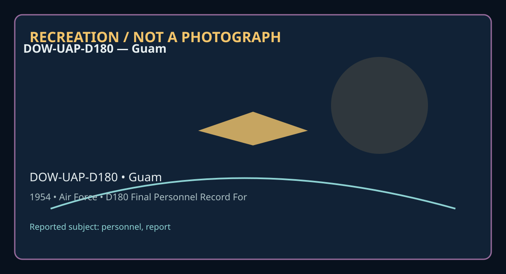

Release 07 / archival case file / DOW-UAP-D180
D180 Final Personnel Record For Mccoy Howard M Us Air Force 1954
This d180 final personnel record for places a personnel, report thread in a 1954 Guam record.
ID: DOW-UAP-D180
Filename:
DOW-UAP-D180_Final-Personnel-Record-for-McCoy-Howard-M-US-Air-Force-1954.pdfDate marker: 1954
Location: Guam
Agency or collection signal: Air Force
Pages read: 298

RECREATION / NOT A PHOTOGRAPH. The diagram is an interpretive editorial aid, not source imagery.
What this document says
The opening page's extracted text begins: “~ ...i, {; I NFFC F 1 7C2 0 15 ~CCC Y t- GWAl<O ~ .Afi CO O 00 055C NP~C F l l C2 C 1 5 - MCCO't f- OWARO M Af CCC 0 1 eC54 -- NPRC F l 1 02 01 5 MCC0'6 R0\-1 1\RO M Af 0 42 3 0 3163 - t ~ 0 0) 's s <( z ·-”
Across the 298 pages, the recurring terms are personnel, report. Those details belong to this file, not to a generic case template. Page-level reading follows:
- Page 1: ~ ...i, {; I NFFC F 1 7C2 0 15 ~CCC Y t- GWAl<O ~ .Afi CO O 00 055C NP~C F l l C2 C 1 5 - MCCO't f- OWARO M Af CCC 0 1 eC54 -- NPRC F l 1 02 01 5 MCC0'6 R0\-1 1\RO M Af 0 42 3 0 3163 - t ~ 0 0) 's s <( z ·-
- Page 2: 1CCOY 'l,u~\sss ~i~ ~ _,;. - . .....,...,_ .,. .. j \ &,L HOWARD M Mccoy 5465 WHITE OAK AV£ -to,, ENCINO CALIF 550 >:9se '
- Page 3: MCCOY HOWARD M. ..,,u\J,uss ·- ~i\J ~ .- .,:· / ~ ~ HOWARD M Mccoy 5465 WHITE OAK AVE ,t°" ENCINO CALIF 550 1.9se ;. .A '
- Page 4: • 1A. ADD RESS CODE VETERANS ADMINISTRATION 1B. TYPE OF CLA IM 1 /") REQUEST FOR INFORMATION J (Separation records attached) D I C INSTRUCT ION-This form may be used in lieu of VA Form 07-3101 if a DD Form 214, or equivalent, is attached by stapling to the action copi es forwarded to the mili tary records activity. 2. DATA REQU EST ED 3. FILE NO. (Inc lude p
- Page 5: • IA. ADDRESS CODE 13 VETERANS ADMINISTRATION REQUEST FOR INFORMATION (Separation records attac!Led) INSTRUCTION-'f.his form may be used in lieu of VA Form 07-3101 if a DD Form 214, or equivalent, is attached by stapling to the action copies forwarded to the mil itary records activity. 10. TYPE OF CLAIM DIC 2. DATA REQUEST ED □ SERVICE -~, MEDICAL □ DENTAL □
- Page 6: REPLY CONCERNING MILITARY RECORDS IY( in on this subject, please return yo;ur original The reply to the inquiry will be found In the checked item(s). request, this form, and any other form you complete. ' , D Copies of requested military D personnel D medical records are attached. We suggest you make an extra copy and guard against losslor damage. We regret
- Page 7: • • • • • • • • • • • • • • • • • • • • • • • • .•,. • • ~ • ,... NRPMOPLH NAT I Oi'lPiL ARCH IVES AND RECORDS ADMINISTRATION 2/20/98 L406 MPR FINDING AID REPORT 11:54:39 I• • 000 01 8054 000 01 8054 BRICKER HEf~BERT QM p 0000 60·~ 558 000 01 8054 MCCOY HO!;JARD M AF B 0000 365 690 s 000 01 8054 MCCOY HOl;JARD M AF F 0001 702 075 000 01 8054 MCCOY HOvJARD M
- Page 8: . TIIIS P011TIOK Of TIIIS FORM WILL URVE AS A llCQUUT IF COHl'UlED UD RElllRKED 10 llllS cc:iu'R.,. I NrYAC'f ACl Of lf74 CO.Mn&.Uta -Of..lU.not4. n.. ........... w,..:...,i.. 11 ...,,_. - .....,_ .. ..i..-.. ""'-i:- .. _....... , ....... ·-· ..i...... .......... ..,••~.. .,. .._...._• • ,,i. I U IC. SU.(oUI -..I ..,..&., ,_ If.lo ..,__ ,_._.., ._ .....,J,..
- Page 9: I : Jll c ~ LJ rr(__ SERVICE NUMBERS: / 2 0 ..5 { • BIRTH: /;2., • 1- 0 7 ?-· .3 l s-l 1 DATE OE' D~ES -OF SERVICE: . -:.·.~.~ r: - :: CITY/TOWN AND srATE OE' RESIDENCE, DATE OF ADDRESS: s Gv~ fJ , trt-d MARITAL STATUS: DEPENDENTS: rU ;;r·.? RANK/GRADE: )./ / ft J} J,A- ; SALARY: ASSIGNMENTS AND THEIR GEOGRAPHICAL LOCATION~ )JJA. I SOORCE OF <;GMMISSION: M
- Page 10: ~ 27. DECORATIONS, MfOALS. BA~ES. COMMENDATIONS, CITATIONS AND CAMPAIGN RIBBONS AWARDED OR AUTHORIZED Bronze Star )led.al American· ~ Defense Service Vedal European-A!rican-K1dd1e Eastern Campaign~ w}battle e~ .. I • Alllerican Theater Ribbon World War II Victe J(edaJ. ~ on of Jleri t National ~ /: "' 211. IIOST SIGNIFICANT DUTY ASSIGNMENT 29. WOUNDS RECEIVE
- Page 11: ---- • \"- ~ • NRPMOMGH NATIONA L ARCHIVES AND RECORDS ADMINISTRATION L416 MPR FINDING AID REPORT • 000 01 8054 000 01 80~4 BRICKER HERBERT QM p 0000 • 000 01 8054 MCCOY HOWARD M AF B 0000 s 000 01 8054 MCCOY HOl,\JARD M AF F 0001 000 01 8054 MCCOY HOWARD M AR B 0003 • • • • • RECORD CHARGED TO: FC5 SEARCHER: DATE: • ? C( • \J es---"' • • • • • ~ ~ • • 9/24
- Page 12: · ··-·•••••··•·------------------------~ lMIS PORTtOM OF TNl5 fC,.M WILL llg~(. "l~A 8(QU[ll If COMPUllD ANO lllURMlD 10 1HIS Cl•llk w.. .,! __,.. ..·-·..,_,_. ~"".......·-·................ ---...- ~ .... ~ -............, .........,_,..,,__ _.. .,..,__ ._ ..._ .. k ~ _.. .._ ..,..,..... ._.,~ -••-" _, k .,_,.,--' ~• ...........__.....-,...._.............--.
- Page 13: ,=;.6C/r s;_ vv,c:_(-b r,//?.-/ P.O. Box or Street Address , le .,,. Q "" Name 'lf o £.o,..,,/ • City D1 ;.G:c.ir IV';f!1~•111AI I{ rso.wJf:. IRcc.,ord6 CcaA.J-/4 r CJ?otJ fJ11jG. 8/v/ SI. L~1.,u-J /Mo t.313;;., / i! Ii I 111 ll I !! i Ii 11 Ii !I I li I, 11 IuIlIIi !I II 11 l Iii I II ll,11 li ; iIi
- Page 14: ""' ,. - ~ r - _._:.~ . / .. TUIS PORTIOH Of THIS FORH WILL. JUVE U A ICQUEST If COHl'UTED UD RElURKED TO THIS CEMTCR . I raro.c-r Act Of U74 cowti.utca -0&-nott. n.. ..._... i.,.;..11.. i. ..~ - _,.. ..i ...- ..,_._ .. ...,,...i... , ...... ·-· ....... .......... .,••u.4 • ..-.-• •14 j U & C. UJo,(•01 ~ ~• .. ,I.&, ,.,_ ~hr ._ .....-J,.,. ............ . ..~
- Page 15: POKTIOK OF llllS fORH Will :IERVE J.S l UQUEST lf COHPUUD UO RElllRK[D 10 1\IIS CEit;(( C.URIIIG IIECTlotl I - l•FORKI.TIOM •tcD£0 TO LOClTl lC.CC>tlDS IOM( USED S(RVIC( (L.ul , (Aul, and alddla) SOCIJ.l. SEOJRITY UO. DA.TC or blRlll PLA.C( Of· Bl Rni Pl/ ~CTIVE SERVICE. PA.ST MiD PRCSWT OlT(S or ! CTI V[ S[ RVIC[ C h oe l on• or S(RVIC( ;{HlUllO . S[ RV IC[
- Page 16: r I , REPLV CONCERNING MILITARY RECORDS The reply to the inquiry will be found in the checked item(s). If you write to us ag in on this subject, please return your original request, this form, and any other form you complete. 0 Copies of requested military D personnel D medical records are attached. We suggest you make an extra copy and guard against loss or
- Page 17: I I NSTRUCT IONS : To be complet ed by a 11 retired personne l when any per mane nt chan~e occurs. Type or print c Lear ly. Comple t e all items. Send one copy to t he Ai r Adjutant Gener a l, Headquarters USAF, ATTN: Mili tary Per sonne l Records Division, Wash ington 25, J D. C.; one copy to the Director o f Mi l itary Personnel. Headquarters USAF, ATTN: R
- Page 18: COMPLETE ADDRESS NAME OF SPO~E OR NEXT OF K I N /Y!;e5. Hu4/nd &, l'1C:C:,y 5a.nu2, -==--- t- - --- -------- -----------t- ------------------------- COMPLETE ADDRESS NAME OF PERSON TO NOT IFY IN CASE OF EMERGENCY \=i t"t ,, , • t'/ S r-t1/E't2M /JfRK I 7:<5"' ~ f-- 7f------MO-R_E_F_O_R_MS__A_R_E_N_E::-E-cD,---E-,D--:(:;;R:-e-s-e-rv- ,"'"· s- t:-:---:C,-;-h
- Page 19: FROM H, M. McCoy #_ 13 Evergreen Tr ail Severna Park, Maryland TO: Air Adjutant G Headquarters USAF eneral ATI'N: Military Personnel Recor ds Division Washington 25, D. C.
- Page 20: RMANENT ADDRESS (No . and s treet zone and s t ote)/'coo ,.. ..:5"3'/ COMPLETE ADDRESS Check on form DATC PREPARED Re(l ul ors t o AAG only.) FORM ARE OBSOLETE . NOTIF ICAT ION I NSTRUCTI OIIS: To be completed by a II retired personne l when ony permanent chnn/le occurs . Type or print clear ly. Complete all items , Send one c opy to the Air Ad jutant Genera
- Page 21: r -- __.. -... -----. 10: A,,e AuJuTA/t/7 {:zbf/e@tlL , #bQRS tlS'AF
- Page 22: VI RE TIRED MASTER PERSONNEL RECORD FIL E COVER SHEET RE TURN TO Ml LITARY PERSONNEL RECORDS DIVISION DIRECTORATE OF ADMINISTRATIVE SERVICES HE ADQUART ERS USA F r I > -I z ► ~ .,, :a VI -I z ► r"' r 0 0 r"' ~ "' :a VI < 1--' n C(I \.11 "' \.11 00 \.11 :s:. ~ PLEASE DO NOT FI LE ANY PAPERS ON TOP OF THI S COVER SHEET FORM GP O 9 37 3 7 6 AFHQ 0- 826 F EB 5
- Page 23: Card #1(2) , oftlJ: 3.ZUC!I•" ACM[ Vl~IDLt REC.OROS.INC., ~ HICAG(> RATING: TYPE. DATE , ORDER # AP 10-10-31 P0265-2 OCAC 1931 P 4-1-39 P076-87 OCAC 1939 sP 10-4-41 P \,I234-10 oc~c 1941 1 - " - ' - /-¥7 E "3- < J:!r .., - 2r - .~?. CO 6-29-40 P0252-l CCAC 1940 Acft O 7-1- 41 P0202-66 OCAC 1941 FLYING STATUS O R DER S A PPOINTMENT: RANK. DATE, ETC. DATA 2d L
- Page 24: FROM TO STATION ORDERS March Fld. :ID168-27 1 J0 Kelly Fld. 70133-29 131 Selfridge Fld. 1D225-28 131 Pasadena, Calif. AGL0 5-10 34. Jright Fld. .1D73-14'35 ~lright Fld. , 52•24136 Pasadena, Calif..'.'!)131-44140 Wright Fld, O. ,7Dll9-33'41 ~ ~ -,,,:;:,,----'---- --'-------'----....!--"-'----'-'"----L-----L---------~- PRINCIPAL DUTIES Stud, AC Primary 1''ly
- Page 25: S T A TION ORDERS GL 1-24-44 ~mAGL3-l-44 APO 887 i'-i-Y \"iright Fld,Ohio i'1lr l3 /J.S :1qATSC 3ur opel 36 5, 7- 24 45 HqAAFLO 10 17- 45 PRI N CIPAL D UTIES TD SAT, C&GSS, USNWC di ., .:..TO: USSAFIE, dy w/ A- 2 Sec 1'Mc.- Hqk'PSe : Rost9- l5-46 llq_AMC; 4020th AAFB°lf; Intell Staff Officer Hq ·"'-· C:15- Indust rial Coller1e Armed Forces flair, DC Ft
- Page 26: STATION ORD ERS PRINCIPAL D UTIES FROM T O - ' - ~ ----~
- Page 27: ---------------------------------------------------------- ---- ------------------ ---------------------------------------------- - - ----- - ------------ ------------------ ------------------------ ------------------------ ------------------ A. C. Mc cor, BOWARD MONROE 'j ~G~4 GRADE ORGANIZA• AND TION AND =--==-==-=-=--=-·==--=--==-==-==--=--=-=--=-=··==-·=
- Page 28: ----------------------------------------------------------- ----------------------------------- ------------ ---------------------------------------------------------------------------------------------------------------- ----------------------------------------------------------------------------------- -------------------------- --------------------------
- Page 29: ,. -~ - ~ --.-..-- - ORGANIZA TION COPY L ~~~ Reaccmmuli shed 6 JanuarY 1953 CHECK I. LAST NAME- FIRST NAME- MIDDLE I/AME 2. ARMY SERIAL NUMaER 3 . GRAD~ 4. COMPOIIOIT s. ARM OR SERVICE I r; CHAUGES L , Re..,.Ali' BASIC IDUTY V> RE9'IVED McCOY HOi•I "-on M"~OE 550 A ... -- :,: 1~11 7. RELIGION ( Voluntarv) 9 . l'IEIGHl MOS (SSN) > ~ 6. CITIZENSH IP STATUS 8
- Page 30: .,,, ZS. CHRONOLOGICAL RECORD O F M I L I TARY S E R V I C E DAT.s r,:os. NO. OF I UNIT OR ORGANIZATION AND TYPE OF' I FROM TO !SSN1 DUTIES NONDUTY. \ STATIDII OR THEATtR REPORT DAYS SUBMITTro 1Jan42 2?Aor43 ?050 A7:A Ch . Pron Lab 1. ..,®; iiIC _En2Di v Pr on Lab MOPR I 28APr43 28Jan44 ?050 Ch. Pro--neller Lab AAFMC.En2Div Prop Lab MOPR 29J an44 22Jun44 2?0
- Page 31: 43. FlYING STATUS 44. RATINGS. SPECI ALTIES. ANO DESIGNATIONS , DATE . RESTRICTIOll5 RATIIIG. SPECIALTY EFFE ATE AUTHORITY OR DESIGNATION AUTHORITY WD OCAC PO 242 160ct3 Pi lot 111! 1 WDPO 265 Par 2 Par 2 - 1Apr39 ,'IDPO 76 Par 87 Air c. Obs . 28Aug41 WD FO 202 Par 66 Sr Pilot 60ct41 llD .t'O 234 Par lU - Comd. Pilot 20Jan4? Hq A.AF PO 12 Par 2 - - 45. AIRPL
- Page 32: 30. BIRTH PLACE (Cilv, Slate, 31 . EMERGENCY ADDRESSEE (Name, &lotion.ship, Numb(r, Strut, Citi/, State) 29. PERMANrnT MAIUl!G ADDRESS (No., Slreet, Oitv and State) 406 Elm St Elmira. New 32. MAlilTAL STATUS J} /Jc.? , 33. NO. OF DEPENDENTS OTHEr. \7 1 JP.Ell 36. EDUCATION !i"ordr,n Countrv) Kane . Pa York 34. • PARENTS' BIRTHPLACE PARENT COUKTRY OF Bll!TH C
- Page 33: ;j NOTE TO CBPO \ FILE IN UNIT PERSONNEL '\ \ _,/ RECORD GROUP -{~ ,, / -----------=.,;,.;;;;;:;-------------! -----------.... STATEMENT OF SERVICE (Creditable under 37 USC 205) LAST NAME - FIRST NAME - MIDDLE NAME SERV ICE NUMBER(Sl / SSAN ~ 30 J76) ~rccoY, HOWARD n01fROE NATURE OF ACTION ( For enlisted - enter "ENL" and compon ent.) (Fo r commissioned- ent
- Page 34: ">HHl-NA.- ~..PPLICABLE CHARACTER Of SEPARATIOII { --\ I \j DEPARTMEIIT REPORT OF SEPARATION FROM THE ARMED FORCES OF THE UNITED STATES HONORABLE AIR FORCE - 2 SERVICE HUMBER 3. GRADE - RATE - RANK AND DATE 4. COMPONENT ANO BRANCH OR I LAST IIAME - flRST IIAME - MIDDLE IIAME E o"Yflf, ~2Jun42* cLASfJSAF 550A UCCOY HQ",'/ARD MONROE 1 ~ 5 QUALlflCATIOflS I 6.
- Page 35: V ...., - CERL: ,.,.. {I OH I OF I HFORMATI OH FOR RETIR1,__ _.,; PAY I l. LA ST NAME - FI RS T NAME - MIDDLE NAME 2 - SERVICE NUMBER(sl JlcCoy, llo; ard If. 550A 3- DATE OF RET IREMEHT 4 . PLACE OF RET I REME NT(I fappli cable) 5- LAST ORGANIZATION, ARM OR SERV ICE 31 Aug 54 Boll ing AFB, Wash, DO Hq 1005th Insp Gen Sp Invee Op, Hn Comd. USAF 6 . TYPE OF RE
- Page 36: -- -- AICAG-61.•M Jl.oCoy, Howard M. STAD.MalT OF Mn,r1'ARI SERVICE OF HOWARD MOJlROE J.CCOY Oolonol Boward lbnroe McCoy, 550.A.1 Regular Air Foroe, Retired, baa held a continuoua cO!lll!llaoion aince 12 June 1930, with ccmtinuows aot1'90 duty from 12 June 1930 to 31 August 1954, the eti'eotiw da.te or h1a retircnant under the prov.l11ona of Seotlon 5 or the
- Page 37: --., • / D efinitions of abbreviations a r e contai ned in JANAP 169, Septembe::,- 1953, DEPARTMENT OF THE AIR FORCE WASHINGTON SPECi AL ORDERS) 27 Au.gust 1954 NUMBER 167) EXTRACT 24 . SMOP 7 , SO 14 6, DAF, CS , r elating to r sg of LTCOL JOHN M COULTER, AO430789, µ_.q USAF, WASHDC, with EDCSA: 10 Sep 54, as reads " asg Hq AF Sp 'Wjrn C e n , ATRC, Kirtlan
- Page 38: APPLICATION FOR UNlf-ORMH ICES IDENTIFICATION AND PRIVILEG.. RD Fom, Approvtd. Budgd B11r~a11 No. 22-Rl74. SECTION I-IDENTIFICATION OF PERSON UPON WHOM ELIGIBILITY FO R DD FORM 1173 15 BASED 1. LAST NAME-FIRST NAME-MIDDLE INITIAL OF APPLICANT 2 . MAILING ADDRESS (No., Stroot, Ci~ond Stoto) (Omit ii sponsor is 3. TELEPHONE NUMBER (uniformod services or civili
- Page 39: I d. □ I am the unremarried widower of the deceased member or retired member named in Section I, that I am not now married and have not remarried since date of death of said member or retired member and that at the time of said member's or retired member's death I was dependent upon such member or retired member for over one-half of my support because of a m
- Page 40: C1 (, c/,R~crl a 0 / ~ / - DD FORM 2 AF~ ( n (P.es) y ~ 0 APPL I CATION FOR · 1cATION CARD (Print or Pee. l ?o ~,.o ----- HEIGHT ~ ,_2-'' ..-S.;_E_R_V,-I_C_E_N_U_M_B_E""'R- ~-- type) .:>.Fo .. WEIGHT COLOR EYES BLOOD TYPE ··o .. a~ CJ B. REAPPOINTMENT UPON EXP I RATION OF COMMISS I Ol'I c:J C . TRANSFER TO HONORARY RES C, E. REPLACE MUTILATED CARD C} F. COR
- Page 41: . _\'.;~:::.~:~:"~:~;~,'.:.T:;.;:::~J.,"""'"~ 0~ TAG ... n(' F)9 C I 't'r'O G NAME MHl PUNANUJT MAllhlC. ADl>Rt:U o~n or II IRTK, IF AVAi LUU: MC CO'l 1 HOWARD M. 550A RURAL ROUTE , COL Retir~(;5t 31 August 195:.. II ,1 FAIRFAX S'rATIOO 1 tNTCR IH fltE $PACE. PAOVIOl:D tELO'I tACtl (No Entry Here) VIRGIMIA ALLOWAHCf OR ALLOUl£NT HOW IN UHCT UftCTIVI DAU FIN.
- Page 42: "'
- Page 43: .AFPin1-4Bc/:fajor :-'.acartn9-/ cms/"·'ickel berg/76651/40162 • R"H'E E. MAC~TNEY Major, US ~F 4 As~t. Cri~ •. '. • ~ ~ i~~s Branch Fromotionf, & '~ ~ "!. is Division Direotorate of Juilitar-y hn ,;,OWlOl. Ueno for Record: Appl for vol ret approved by SAFPC 26 Aug 54. UP Sec 5 Act of Congress apY1roved 31 Jul 35, as amnd, eff 31 Aug 54. A review of his serv
- Page 44: 4ut)" ».o. to 02, 03). 2. ,r.Pi.__,_.,.,h ~. 'ZI mint 19 •. mwnm elal Ord re Col ( t1 • P 0 on o et of Co ~,..........t 1964 and 1 rocniriooont thortty. It t.1 i'u.Jttll r ~"''"' t 10 rnet oft turni 4 Oo i I of ~ll ulcl bo to: Co , 1005th ( 0 • Oolonol o 1006th (JO) c/o nt etor •~ton 25, n.o. clal. lirr t ~ o l exten1loh 7§6151 vbe Ol'dOlMJ • • !!MWl'lffl'IT
- Page 45: • Definition s of a bbrevia tions a r e conta i ne d in J ANAP 169, Sep t ember- 1953 . DEPARTMENT OF THE AIR FORC E WASHING TON SPECIAL ORDERS) 27 Au gu st 1954 NUMBER 167) E X TRA C T 24. SMOP 7 , SO 14 6, DAF , CS, r elating to r s g of LTC OL J O HN M COULTER, AO4 30789 , H.q USAF , WASHDC, with EDC:SA: 10 Sep 54 , a s reads "asg Hq AF s ·p W'ifn Ce n ,
- Page 46: .; HEADQUARTERS AIR MATERIEL COMMAND WRIGHT-PATTERSON AIR FORCE BASE, OHIO MCGGO BCB SPECIAL ORDERS NUMBER 165 EX '!'!,_-' CT 26 Aygus t 1954 • • 60 COL HOWARD M McCOY~ 550A PRES at LV STA - Route #lD Fairfax Stationg VA E/R t o HQ AMCg Wright=Patterson AFBr Ohio is REL from ASG with HQ AMC and is ASG to 1005th IG SPEC Inveetigation GPo HQ COMD0 USAF v REPT
- Page 47: • r I 25. Under prov of sec 4 0 2 and 4 09, Pub Law 351-8 lst Congress, MSGT EUGENE V SEIPLE, AF6644759 (AO 579181}, i s rel from as g 3750th USAF Hosp, ATRC, Shepp a rd AFB, Tex , r et in gr of lSTLT, eff 31 Aug 54, and WP his home . PCS. TDN. 5753500 548-141 P 53 1-02, 03 S 99-999; 5753500 548-242 P 514-01 S 99- 999. r {. • 26• • COL, HO ..:WAB.D....~~~QY.
- Page 48: • \ 17. Under prov of sec 402 und 409, Pub Law 351-8lst Congress, each of the FNO, is rel from asg org shown, ret eff 31 _Aug 54, and WP his HOR, or place from which ordered to AD. All com held are term on eff date of ret. PCS. TDN. 5753500 548-141 P 531-02, 03 S 99-999; 5753500 548 - i 4 2 P 511-0 1 S 99- 9 9 9: [ Gr, Name, AFSN Org lSTLT WALTON E JOHNSON,
- Page 49: • Gr,iName, AFSN Org Ret Gr A/lC PHILLIP S ROBINSON, 1080th Hosp Sq, Hq STAFF AF19090040 Comd, USAF, SGT Letterman AHosp, San Francisco,Calif A/2C MALCOLM E PAYNE, 1077th Hosp Sq, Hq A/2C AF13273909 Comd, USAF, Brooke AMC, Fort Sam Houston, Tex 15. Under prov of sec 402 and 409, Pub Law 351-8lst Congress each of the FNA, at HA indc awt orders stat:.is, is re
- Page 50: I r • 9. Having compl 30 yr svc on 27 Aug 54, WOJG (W-1) FRANCIS LEDOUX, AW901997 (AO440614), is adv eff 28 Aug 54 to the rank of LTCOL on the USAF Ret List, under prov of sec 203(c) of the Act of Congress- appr 29 Jun 48 (Pub Law 810-80th Congress). , 10. MAJ' ISABELLE A KUSKOWSKI, 20993W, is rel from asg and ·•dy 2353d PERP Sq (AFOR), CONAC, Parks AFB, Cal
- Page 51: • - Definitions of abbreviations are contained in JANAP 169, September 1953.9 DEPARTMENT OF THE AIR FORCE WASHINGTON SPECIAL ORDERS) 27 August 1954 NUMBER 167) 1. SMOP 1, SO 95, DAF, CS, relating to rsg of MAJGEN JARRED V CRABB, 535A, Hq ADC, .Ent AFB, Colo, to Hq CADF, ADC, Grandview AFB, Grandview, Mo, with EDCSA: 26 Jul 54, as reads "TDN. 5753500 548-131
- Page 52: ~ '> ".. DEPARTMENT OF THE AIR FORCE HEADQUARTERS UNITED STATES AIR FORCE WASHINGTON 25, D . C . !-!EUORANDU!'.! FOR SECBE.TARY OF THE AIR FORCE PERSOm:1EL COUNCIL SUl3JECT - Colonel Howard M. McCoy, 550A, USAF 1. Attached is application for retirement submitted by Colonel Ho,-18.rd 1-i. McCoy for consideration and decision. 2. Colonel McCoy has completed
- Page 53: STATE.MmlT or M~ITARY SERVICE o:r HOWARD MONROE MlCOY Colonel Howard )k)nroe McCoy-, 550A1 Regular Air Force, Retired, has held a continuous commios1on since 12 June 1930, with continuous duty 12 1930 to 31 August 1954, a c t i Ye f r o m J u n e t h e e f f e c t i v e d at e of hia retirement under the provisions ot Secti on 5 of the Act of Congreeu, appro
- Page 54: DEPART~NT OF THE AIR FORCE STAFF MESSAGE DIVISION INCOMING UNCLASSIFIED MESSAGE AFHQ FORM 0-309d 19 JAN 51 U.S. GOVERNMENT PRIITTlllG OFFICE PREVIOUS EDITIONS OF THIS FORM MAY BE USED l6-Ga73lt-1 L....
- Page 55: , . DEPARTMENT OF THE AIR FORCE ·• HEADQUARTERS UNITED STATES AIR FORCE WASHINGTON 25, D. C. 2 6 AtJG 18§4 MEMORANDUM FOR S.2:CRETARY OF THE AIR FORCE PERSONNEL COUNCIL SUBJECT: Retirement - Colonel Howard M. RlcCoy, 550A, USAF 1. Attached is application for retirement submitted by Colonel Howard M. McCoy for consideration and decision. 2. Colonel McCoy has
- Page 56: RECt. lVEO SAFPC _ _ 1954 AUG 26 PM 3 34 ,. ·• •
- Page 57: MEMORANDUM FOR DIRECTOR OF MILITARY!JERSONNEL, DCS/P 27 JUL 1954 ATTN: AFPHP- 4- B-C SUBJECT: Application for Voluntary Retirement of Colonel Howard M. McCoy, 55OA 1 . Attached is application for voluntary retirement submitted by Colonel McCoy dated 27 July 1954 with indorsement recommending approval by his immediate cormnander, same date. 2. This Directorat
- Page 58: • Basic ltr from Colonel Howard N. McCoy, 1005th (I G) Special Investigations Group, c/o Directorat e of &pecial Investi gati ons, Wash, DC, subj: Api:lication for Vol unt ar y Retil·ement, d~t ed 27 Jul 54 AFCSI - llC MIL 18-4 1st Ind 2 7 JUL 195' EQ, 1005t h (IG) .SPECIAL INi7ESTI GATIOHS GROUP, c/o Directorat e of SJ?eci al Investigations, Headquarter s U
- Page 59: HEADQUARTERS • 1005TH 1G SPECIAL INVESTIGATIONS GROUP C / O DIRECTORATE OF SPECIAL INVESTIGATION HEADQUARTERS UNITED STA TES A IR FORCE WASHI NGTON 25, D. C, 27 July 1954 Sl13JECT: Application for Voluntary Retir ement THRU: Commander 1005th (IG) Special Invest i gations Group c/o Directorate of Special Investigations Headquarters United States Air Force Was
- Page 60: ______ _ A TT A C ........HM___ E ..,..NT_ S UMMARY: This attachment outlines the exc eptional circumstances and factors which dictate this office r ' s action i n r equesting voluntary r etirement. l / It reviews his specia lized experience in the develop ment of physical securit y and a llied e quipment, wh ich work has occupied most of his time since 194
- Page 61: ·• .., BACKGROUND: The decision to take this voluntary retirement action was taken only after the most thorough deliberation. It has been the most im.. portant one made by him in his entire military career, and it is also the most considered one, £or he has been preoccupied with it ever since 4 March 1954 when a De part:Inent of D efense Directive abolished
- Page 62: national security by such action. He realized that: - Just as a nationls organization for war depends on the technical weapons which are on hand .. so does a nation1s facilities security program depend on the technical security equipments which are available! It is estimated that less than 10% of the technical equipment considered necessary to implement a re
- Page 63: i PSEA to ensure extension of the work of the earlier laboratory (SSO). PSEA was a joint project under the management control of the Depart.. ment of the Air Force with the r e sponsibility for providing for the development of physical security and related investigative equipment as a common service for all agencies of the Department of Defense. It is estir:
- Page 64: The matter of the Agency's continued existence had been under con.. sideration by the Deputy Secretary of Defense since March 1953. The three Military Departments and the Office, Domestic Security Programs of OSD, all represented on the PSEA Policy Board, are on record as having supported the continuance of the Agency1s activities, thus verifying the need fo
- Page 65: ·• regards to its industrial security program is limite d to the statement of policies and principles, it is apparent that the most practica l and sensible way to fill the void between policy and an adequate working security system in the defense industries is to follow the precedent of the Civil Defense and disaster control organizations and have the Govern
- Page 66: • . . central station type are less than fifty percent effective in preventing penetration of the protected area s by unskilled burglars. On the other hand, prote ction against thoroughly trained saboteurs must be n e ar p e rfect because the saboteur can b e considered to have accomplished his mission once the penetration has been effected. It is estima ted
- Page 67: ·• . ' THE REMEDY: During periods of leave since 4 M a rch 1954 , while acting unofficially and solely as an individual, this office r. has consulted informally with r epresentative industrialists and with casualty insurance and plant pro. tection officials conce r ning industrial s e cur ity proble ms and what an individual such as himself might be a b le t
- Page 68: ' • future to Headquarters, Air Materiel Command, where presumabl y he will engage in procurement work. His primary ~SC is Research and Development Director (8416) w:i:th secondary AFSC .. Staff Intelligence Officer (201 6). Including postgraduate schooling, he has served in these categories for the past twenty years. Because of his experience, subject offic
- Page 69: 20-202 Headquarters Air Materiel Command SCIENCE SURVEY OFFICE
- Page 70: • • AMC Manual No. 20-1 Organizational Directive No. 20- 202 Revised lune 1949 Intelligence Department SCIENCE SURVEY OFFICE (MCIS) l. Mission: Perform the classlfled functions as prescribed. DISTRIBUTION : "A,,
- Page 71: •• RESJRIBffll THE SECRETARY OF DEFENSE WASHINGTON ? February 1951 MEMCRANDUM F<R THE S:EXJRETARIES OF THE MILITARY DEPARTMENTS THE ASSISTANT SECRETARIES OF DEFENSE THE JOINT CHIEFS ClF STAFF THE CHAIRMEN OF THE BOARDS, COUNCILS AND C OOITTTEES, 00D THE DIRECTORS OF OFFICES. am SUBJECT: Physical Security Equipmen.t Agency .The attached charter for the Physic
- Page 72: • • " • lR-ESl~i[~ THE SECRETARY OF DEFENSE WASHINGTON Pll¥sical Security ~~~i p~ent A{;encr Pursuant to t he authority vested in tl1e Secret ary of Defense by the NatioMl Security Act of 1947, as amended, there is hereby established, as a joint project under the mann ~ement control of t he De~artment of bhe .Air For ce, a Physical Security Equipment A{;ency
- Page 73: • > •• • IRE9fRl6fEBI modifying tbe equipoent, or ad.aptinh the already demonstrate~ phenomena and principles. (Note: Foreign infort1ation and equipment will be pro cured through established Intelligence channels.) 2. Experimentally produce prototype physical security equipment : a. Baaed on requirements furnishea to the ~ency by t te various Bt~enci es of
- Page 74: • • • ftESiRl6TE9 ., 2. The Secretary of the Air Force, with the concurrence of the other military secretaries and the approval of the Secret~cy of Defense, eh.all appoint a Director of tr.e Agency. The Director of the Agency , i f a military officer, shall be appointed for a term of three years and shall be eligible for one r eappointment. 3. The Assistant
- Page 75: Department of Defense Directive • SUBJECT Physical Security Equipment Agency Pursuant to the authority vested in me by the National. Security Act 0£ 1947, as amended, there is hereby reconstituted in the Depart ment of Defense, as a joint agency under the management of the Department of the Air Force, the Physical Security Equipment Agency (hereina.fter cal
- Page 76: • II ORGANIZATION 1. There is established a Policy Board consisting of the Assistant Chief of Staff, G-2, Army; the Director of Naval Intelli gence; the Director of Special Investigations, Air Force, and a representative appointed by the Secretary of Defense, nth the responsibilities hereinafter outlined. The chairmanship of the Policy Board shall be rotate
- Page 77: •• 1tithin the limits of resources available to the Department of the Air Force for such purposes, proVide for adequate administrative support for the Agency. The term "administrative support" as used in this 'directive is defined to include budgeting, funding, fiscal control, manpower control and utilization, personnel administration, security administratio
- Page 78: • • ' . 19 Jan 53 R-515 .1 \.. and equipment Will be procured through established intelligence channels or as directed by the Policy Board). b. EJ!perimentally produce prototype physical security and investigative equipment: (l) Based on requirements furnished to the Agency by the various agencies of the Department of Defense. (2) Based on needs anticipated
- Page 79: 19 Jan 53 R-51 . 1 2. Services ot the Agency shall be available to all Department of Defense agencies under procedures established by the Policy Board. 3. In order to further the technical aspects or the Agency's programs, each military department shall designate a liaison ot.f'icer \ representing its principal. research and development stat£. F.ach ; liaiso
- Page 80: • • 4 March 1954 NUMBER 5154. 9 r • • Department of Defense Directive SUBJECT Physical Security Equipment Agency - Abolishment of 1. The Physical Security F.quipment Agency, established by Department of Defense Directive No. R-5154.1, dated 19 January 1953, is hereby abolished. 2. The Secretary of the Air Force will take all action necessary to the orderly t
- Page 81: (If ye , give da~e ~ECTI..ON OF OPTIONS • UNDER THE UNIFORME ~RVICES CONTINGENCY OPTION ACT 1953 LAST NAME· FIRST NAME · MIDDLE NAME SERVICE NLNBER Ho mud: ADDRESS ACTIVE INACTIVE RETI IIED DATE OF RETIREMENT (If applicable) UNDERSTAND MAY SELECT OPTION 1 2 OR 3 AND MAY COMB I NE OPTION 4 WITH THE ONE SO SELECTED , OR THAT I MAY SELECT OPTION 1 AND 2 AND COM
- Page 82: • • • . . • I I • , .. PROMOTIONS ABD SEPARA.TIONS DIVISION s:RPARATIONS ~RAlilOH - RETIHJJMENT SECTION PROMOTION A.El).RmTIBEMENT RECORD Promotion Section ., Please check service :of officer 'tor retirement effectiTe 31 August 1954 • Date 27 July 1954 Johnston OLEBK 550A Name McCoy, Howard M~ (AFSN) Temporaey Orade____ M ~:;..'/.L-L___ a=~.;...~.;;:;~ ....:
- Page 83: ~~ ...... L I. OATES COVERED / /,~ FROM TO OFFICER'S L~ • RECORD l Jy,l 53 3. SERVICE NO. 2. LAST NAME-FIRST NAME-MIDDLE INITIAL ' 550 A McCOY, HOWARD M. 4. DAYS aO I. TYPE A D C 0 0 f) p Ill. 5. CREDIT BROUGHT FORWARD FROM PREVIOUS RECO~ /J /J I S_JG,1A r:1 0 CER.,,,--dlt'"'" .,(FFICER NAME, GRADE. AND ORGANIZATION OF CERTIFYING OFFICER ~/AA . . B. R. FOSTE
- Page 84: - T ' ~ . ' RECORD OF SERVICE - ' . ,, TO: FROM: Military History Unit Separ ations Branch Personnel Records Se rvice Division Promotion s and Separ ation Division REQUEST CHECK OF SER VIC E OF BELOW NAMED INDIVIDUAL LAST NAME• F IRST NAME· MIDDLE NAME GRADE AFSN M.c Cov9 Howard M. Colonel 550A CHECK FOR EFFECTIVE Retirement 31 August 1954 DATE NAME OF CLERK
- Page 85: l r INDUSTRIAL COLLEGE OF THE ARMED FORCES Washington, D. c. 7 July 1950 SUBJECT: Academic Report McCOYI Hcmard M. 550A _..;;..;..;....;...,__,.(;;;;Nam---e...).,.;--------------...(""'se"""r._,i,_a.:,,l_..,.,,N,...o-.,- . TOs • Deputy Chief of Staff, Personnel treadquarters, u. ·s.•Air Force Washington 25, D. Ce ATTNa Directorate of Military Personnel 1. A
- Page 86: For i-7!1.mediate delivery • -~ ................. : . ... -~·.... .. refe. in paragraph.......... ..... . If dellvery cannot be made, return this order to Headquarters USAF, Air Adjutant General with statement of facts. Additional copies of this order will not be furnished. r l I Symbols: DP-By direction of the President AD-Active duty TDN-Travel directed Is
- Page 87: Name No of days. Date LT COL MILLS M HAY, AO381607 12 19 Mar • LT COL ARTHUR F HURLEY, 2322A 9 15 Mar CAPT ALLEN F MCKAY, 20613A 5 26 Mar CAPT MICHAEL J NERI, AO854195 12 19 Mar MAJ WILLIAM L RICE, JR, 12699A 5 9 Apr MAJ HAROLD D L SCHMOLDT, 7697A 9 17 Mar LT COL JAMES B J TOWNSEND, AO1287089 5 15 Mar MAJ CHARLES WEBB, JR, AO1699092 5 19 Mar COL RICHARD H WI
- Page 88: 7 9. DP LT .COL JOl-; FFER, AO336307, r0r r ~~t purpose.comp is USAFR (Prim SSN 9300)(Dy SSN - 9300)(Wj(FSC - 39}{DROS - Oct 45)(DOS - Indef)(Non-1 • ted - not on fly status}{Home address 4105 Harrison St, NW, Wash, DC), is aptd in the AFUS UP Sec 515, Pub Law 381-80th Congress and ordered to EAD in gr indicated; asgd Hq &Hq Sq, USAF, Directorate-of Plans,
- Page 89: 15. UP Secs 402° and 409, fJ .w 351, 81st Congress, ea of the folg-- ' amn having been found phys ically unfit for act sv by r ea!::lon of perm phy dsabl is r etd fr act sv and placed on the aprop USAF Retd List in pres gr, eff 31 Mar 51. Ea amn having prod to hls home, as s hown, to await ret, is reld fr asgmt orgn indicated; retd at home address on 31 Mar
- Page 90: ~ r a 23. Announcement ~.!de of the perm prom of the f~lg-name-<tfl? offs in the USAF, UP Secs 502 and 508, Off Per s Act of 1947, to the gr indicated w/ rank fr dt of this order . f ) 2D LT TO 1ST LT WOODROW W BLALOCK, 18297A BYRON R TOOTHMAN, 20686A 24. DP Announcement is made of the temp prom of 1ST LT ROBERT J MORRISON, 21741A, USAF (DC), to the gr of CA
- Page 91: . ")/J / - I 'l ... HEAD.~UARTERS 1100TH AIR BASE GROUP l I Bolling Air For ce Base Washingt'on 25 1 D, C. 21 April 1953 SPECIAL ORDERS NUMBER 61 1 -- 1. Cfm VOCO, 17 Apr 53 , COL HOWARD !vi. Mcc'OY, 550A, 1005t h IG Specl Inve s Gp , / &]:B_, Wash 25 , D. o., is SUSP:EiillED FR FLY DYoy r eason of entry into a medical pati ent status. Auth: Par 9g(l) , Ai'n
- Page 92: WRIG HEADQUARTERS Am MATERIEL COMMAND HT-PATTERSON Am FORCE BASE, DAYTON, OHI MCAGXS2 O GENERAL ORDERS NUMBER 66 8 August 1949 STAFF ASSIGNMENT COLONEL HAROLD E WATSON 1520A USAF is announced as Chief, Intelligence Department, vice COLONEL HOWARD M McCOY 550A USAF, relieved. BY COMMAND OF GENERAL McNARNEY: BRYAN L. DAVIS Colonel, USAF Adjutant General OFFICI
- Page 93: . 18. - DP anu~ent is made of the apmt as 2Dft_ lll the USAF ell' 6 Oct 49, w / rank fr 6 Oct 49, of the folg-named Distinguished ~I~rads of the Sr Div, ROTC. Appointees who, on dt of acceptance of this apmt, are on AD as comd offs, will remain asgd to curr orgn and sta. Appointees not on AD are ordered to AD in the USAF, eff on dt of acceptance of this apmt
- Page 94: 24 SMOP 19, SO 187,,. cs, relating to CAPT FRANCES ~ FIDE, AL80499, USAF," as reads "rptg 10 Oct 49," is amndd to read "rptg 17 Oct 49." BY ORDER OF THE SECRETARY OF THE AIR FORCE: OFFICIAL: L. L. JUDGE Colonel, USAF HOYT S. VANDENBERG Air Adjutant General Chief of Staff, United States Air Force (SO 195, 6 Oct 49) 6 * u.a. Governtnent .ir Oftice, 10,0 J85187
- Page 95: . ' .. . ~ . . . .. ~, $. rC....-"'""' Fur ~mmediate delwe o.. .. . ... : . .. . . . . . . .. . . . . . . . . . . . . . . ref e- _ to in paragraph • •• • I~-... . If delivery cannot be ma e, return this order to Headquarters USAF, tr Adjutant General with state1nent of facts. Cl AD-Active duty Symbols: DP-By direction of the P resident EDC!llR-Effcctivc date
- Page 96: .. . f · and dy as indicated: and 1 Chanute AFB, Ill. Elf dt of,.nd dt of rank 10 Oct 49. Off wrlfr Wash, DC, on th- named offs (3449) is reld r 011 24 Oct 49 to Emb 0, PAE, eff dt of dy and will rpt to CO, 3345th Sta Med Sq NLT 11 Oct 49. Oath of office to be . 15. Ea of& tHh SolgAAC Ft Richardson, Alask;., rp;fans under A/ Pr-AL US 2D 5243 executed on arr
- Page 97: l Armed Forces, Ft Lesley, lair, Wash, DC. No tvl involved. Pl EDCSA: 16 Oct 49: CURTIS M ANDERSON, 954A (4010) (Non-rated - not on fly status) (FSC 36, Jul 45) JOHN F BABCOCK, 967 A (7314) (Non rated - not on fly status) (FSC - 12, 4 Jan 46) JASPER N BELL, 1163A (2162) (Sr Pit on fly status) (FSC - 26, Mar 44) RALPH O BROWNFIELD, 399A (1013) (Sr Pit -
- Page 98: HEADQUARTERS AIR MATERIEL CO.MtlAND Wright-Patterson Air Force Base, Dayton, Ohio PERSONNEL ORDERS) 25 July 1949 NO. 48) 1. Verbal orders of the Chief of Staff, USAF, issued on the date of accep t ance of commission in the USA.FR, which, under the provisions of AR 95-60, Par 4 of AFR 50-7, granted the aeronautical ratings indicated to the following-named of
- Page 99: • . : · . ' . ) • • I PO #481 Hq AMC dtd 25 July 49. OFFICIAL: ( \ fl.., ' - ' iJfl,(.?U7"t.(//1,'.. :· )J!/U.u{' 1:i:~·( ~ VERNON Mo sinfuWOOD ..·:. ,·..... Maj or, USAF . • •I • • , Chief, Flying Status Unit Military ~er~onnel Di,?,-sion ' -. . • ,: . ··. .. . . , • , : : . . .· .. DISTRIBUTION: ·. ....... •-: :.. Offrs Concerned (5) CO Conceirri:ea (~)- :
- Page 100: SUBJECT: TO: of a official 1 Incl A.pr 7, 1949 Letter of Appreciati on Colonel H. ll. McCoy Chief, Intelligence Department Headquarters, Air Uateriel Conunand \'fright-Patterson Air Force Base Dayton, Ohio 1 0 It is indeed a pleasure to transmit to you the attached copy l etter of appreciation from the Di r ector, Special Investigations, The Inspector Genera
- Page 101: DEPARTMENT OF THE AIB FORCE --. HEADQUARTERS UNI TED STATES AIB FORCE WASHINGTON 25, D. C. 23 March 1949 General Joseph T. McNarney Commanding General Air Materiel Command Wr ight-Patterson Air Force Base Dayton, Ohio Dear General McNarney: On 11 March 1949, the first class of the Training School of the Office Special Investieations wer e gr .::-.duated. Dur
- Page 102: -- HEADQUARTERS • COUNTER INTELLIGENCE CORPS CENTER Camp Holabird., Baltimore 19, Maryland Dec 29 1948 201.22 SUBJECT, Letter of Appreciation THRUi Commanding General Air Materiel Command Wright-Patterson Field TO: Colonel H. M. McCoy, J'i:. Air Materiel Technical Intelligence Section Wright-Patterson Field Dayton, Ohio • 1. It gives me great pleasure to con
- Page 103: ---. , • DEP!..RTNENT OF TI-IE i.IR FOHCE HEJ..DQU,'.,,HTERS UNITED STJ ..TES i,IIl Fen.CE Vii1SHIHGTON, 2 l1pril 1948 E X T it J. C T 12. 1-u-mouncement i s made of the promotion of t he following named officers in the United States 1dr Force under th.3 provisions of sections 502 and 510 of the Officer Personnel /.ct of 1947, with grade and date of rank as
- Page 104: . I I Bri gadi er Gener al Donald Frank Stace , A012708, Air Force of the United (lieutenant col onel , Unit ed Stat es Hir For ce) . • Maj or General James Hilli kin· Bevans, f_,_OJ.4723, J.ir Force of the United States (lieutenant cclonel , Unit ed States li.ir Force) . Col onel Paul Hanes Kemner , ~OJ.4732, Jd.r Force of the United States (li eutenant col
- Page 105: I , Cnl onel Fr ederick Hedge rs Dent, Junior, 1.017504, :,ir Force of the Unitecl States (najor, Unitu l Stat es U.r F0rce ). Col onel Richar d David ~;entv:or th, AOl 7527, JJ..ir F0rce of t h€ United Stc1tcs (naj or , United Stat es i.ir Force) . Col onel Thorias Lurlvrel l Bryan, Junior, 1.0175hl, ,.ir Force cf the United Stat es (r.mj c r , United State
- Page 106: HEM>QUARTFRS AIR UNIVffiSITY Maxwell Field, Alabama 23 May 1947 d-//~ . rf SUBJF.CT: Presentation b7 Colonel B. M. UcC07 TO: Commanding General Air liaterie1 Command Wright Field, Ohio l o The Air University desires to express its sincere appreciation to Colonel H. li. McCoy for coming here on 2g April and addressing the faculty and students of the Air Cocm
- Page 107: f' I C ~ 0 p y Basic ltr fr Air Uninrsity, llaxwell Pld, Alaba.'aia, dtd 23 May 47, to CG AMC, Subj a •Presentation by Colonel H. M. McCoy" AJiC 201 - Kccor, B. K. (0) let Ind HQ, JlC, Wright ~ieldJ Dayton, Ohio. 5 Jun 1947 HG T01 Colonel M. McCoy, Deputy Oonmandina General, Intelligence (T-2)J Air Materiel Cccmand, Wrigh Field, Dayton, Ohio It is nth great
- Page 108: .., AG 201-''cCo•r, Howard U. 25, D. C. 15 Uay 1944. (li llay 44)PO-P Promotion. Commanding General, AnI\Y Air Forces, \lashington 25, D. C. Attention: Assistant Chia£ of Air Stoff, Personnel. 1. Reference is made to letter, your headquarters, dated 12 Uay 1944, lfhich transmits letter of reoO!JlCleridation for the promotion of Colonel Howard t.!onroe l.!oCo
- Page 109: • • -- - - ----- by Army -or ces Promotion g. Colonel AUS M~~ ~ flY4 ~ Ff1t o0tfhk.1L.Re.c RaDk fro.u fHI ut ,...,.___._..vr ~Oi9eV,iYUllb.i 1it i s 16 and ENGINEERING DIVISION (Unit) AAF Materiel CoIJ'D'lland, Wright Field ( Add-ress) SUBJECT: Promotion of Officer. TO: CommandinW General, Army Air Forces (Thru Channels). (AR 605-12) A, A. f. f'fln .~ L Unde
- Page 110: Pv6I 3. The r e lative rank of t his office r has b e e n c on s id e red and t o the best of my knowledge and beli e f, h e is the b es t fitted office r a vailable -in thi s command for the ~rade and po~ ition for which promotion is r ecomme nded. 4. A position va c ancy exist s in a ccordance with a ppro ved Tabl e s of~~ge f zstion or Allo'tment for this
- Page 111: - ..,. ___________ _, 1!1J..RMY A I R FORCES j°AT{1 April 19Li4 PERSONAL HISTORY !lfllllrEMEN,-. OF COMMISSIONED OFF/. SURNAME MSCo.Y . - .. . .,. ORIG I NAL APPOINTMENT GRAOE DATE 2nd Lt. 6-12-30 GRAOE FI RST MAHE HIOOLE I H ITIAL HOWARD M. Col. T O T A L M ILIT ARY SE R·V IC£ T 0 D A T E C O MM ISSIONED OATES OF All PRIOR ACTIVE OUTY NONE D A T E S D F PRD
- Page 112: Ir •1.• ' . , __, • "1,,'. i ........ :-.. ~ ~ MAY I 1944 .....
- Page 113: • r • o etded. SHAW, • ... , . , _ 210.2 Promotion of Officer 2nd Im. !Iq., AAF Materiel Command, Wright Field, Dayton, Ohio, 2 May 1944; To: Commanding General, AAF, Washington 25, D.C. Attention: AAF Pro.mtion Board. 1. Approved. 2. The inclosed recommendation for promotion for Colonel Howard Monroe McCoy, 0-18054, on duty with the Materiel Comand, Army Ai
- Page 114: • • - . JAG/med/ 4406 WAR DEPARTMENT r OFFICE OF THE ADJUTANT GENERAL PROMOTION SECTION. OFFICERS' BRANCH (TELEPHONE EXTENSIONS: 79091 • 79718) File No. AG 201 McCoy, Howard M. Date 13 May 1944 TT1 Apr 44)Po:p- SUBJECT:_ PROMOTION Components: ~ g_,_-A!:_my: Res. : AUS: Ngus THE SECRETARY OF WAR'S PERSONNEL BOARD, THRU : RECORDER (ROOM 2038, MUNITIONS BLDG.)
- Page 115: r HEADQUARTERS, ARMY AIR FORCES • HASHINGTON 12 May 1944 SUBJEx:::T: Promotion TO: The Adjutant General 1. In accordance wi th the provisions of Army Regulati on 605-12, dated 3 February 1944, the attached recommendat ions f or promotion are submitted for Regular Army Officers. 2. The promotion of these officers and others previously recommend ed, on which
- Page 116: ~ ' JAG/oc/4406 AG 201-HcCoy, Howard U. 25, D. c. 29 February 1944. t28-Pltb~P Pronot1on. C<>!':tWl¥ling General, An-.J,Y Air Forces, Uashin3ton 25, D. c. Attention: Aosi~tant Chief of Air Staft, Personnel. l . Reference is made to letter, your headquarters, dated 28 February 19/J.., nhich tranomito letter o.f reoomendation for the promotion of Colonel Houar
- Page 117: AUS- Army of the United States. Symbola: -_,. OP-By direction of the Presld, AD-Active Duty. AA F- Army Air Forces. $pedal Orders ) WAR DEPARTMENT. . ) Washlnaton.10 Dees. 1942 No. EXTRACT __._....... ---- n .., __... • _ ,,,,.~ _ --;;-:::. _.:;_~-~z -- ..... - ---•----- ---• ...,______..,.,___ ...,._ ---•-----•-------- - - ------- ,~v.r. 11 .'·nnoun:-.:c;;
- Page 118: _ -------- --------------------------- WAR DEPARTMENT OFFICE _QF THE ADJUTANT GENERAL PROMOTION SECTION. OFFICERS' BRANCH (TELEPHONE EXTENSIONS: 79091 - 79718) JAG/aes/4406 SUBJECT: __fflQMQTIQ!L__________ Components: -5 ·_Army: _Res. : _AUS: _NGUS v'fo: THE SECRETARY OF WAR'S PERSONNEL BOARD, 'rHRU: RECORDER ( ROOM 2038 , MUNITIONS BLDG ;-) REMARKS: ( Recom
- Page 119: - - - - ~ ~=tructiona on'"""' aid, • I• INDICATE PERMANENT STATUS BY CHECK MARK OATH OF OFFICE X Regular Army ARMY OF THE UNITED STATES National Guard, U.S. (Temporary) Officers' Reserve Corps I, ___________________j1_Qr£AR...P-__E ~--U-~_QQ¥..__(9_!_~Q~l_+_) . , -------, having been appointed temporarily a (All names in full) Air Co rps _________g_~l~-~-~~-
- Page 120: \• INSTRUCTIONS This form will be executed in full upon the acceptance of a commission or appointment in the Army of the United States. Typewriter will be used, if available. FOR THE EXECUTION OF THE OATH OF OFFICE 1. Whenever any person is elected or appointed to an office of honor or trust under the Government of the United States, he is required, before e
- Page 121: ' For in1n1ediate delivery tO---------------------------------------------------- referred to in par. ------------- ---- or prompt return to A. G. 0., W. D. Symbol~: DP-By direction of t he President TDN- Travel directed is necessary in military service WP-Will proceed to TPA-Trnvel by officer or bis depcnclent,s by privately owned automobile is authorized.
- Page 122: ' MAJ TO LT COL WA LTER DUVAL WEDD, Jn. O1-li0l FA ROY JACOD ITERTE O1651G lnr CAPT TO ~!Al LEROY B AR'l'LE'l"l', JH. 016032 CE J OSEPll O RAY .DUNCAN Jo Oll227 Illr EDGAR ALLAN CLAHK E O10S15 FA CJIA RLES J OSEPU DENHOLM 021293 !nf EWING CITASE JOHNSON 019851 SC J OllN TUOMAS CORLEY 021325 rnr JOUN FOS'l'ER RHOADES 019875 Cnv CB AHLES PE'l' ER S'l'ONE 02137
- Page 123: See instructions on reverse side I • Execute and return without dela7 direct to The ..Ad·Jutant ·General OATH OF OFFICE ARMY OF THE UNITED STATES (Temporary) INDICATE PERMANENT STATUS BY CHECK MARK Regular Army ✓ -- National Guard, U. S. -- Officers' Reserve Corps I, -----------------~~_!T-~~-~-•---~~9._gI_J~_-:!~-~_2~2___________________________, having bee
- Page 124: . • I I r ..: . ..... _. ., .... . :J :• ;. • L, • ' - r ,•. INSTRUCTIONS This form will be executed in full upon the acceptance of a commission or appoint,ment in t he Army of the United States. Typewriter will be used, if available. FOR TEE EXECUTION OF TEE OATH OF OFFICE 1. Whenever any person is elected or appointed to an office of honor or trust under t
- Page 125: fl ·G/al/1650 AG 201- "cCoy, Houard tr. April 8, 1942. (4-8-4?.)0P Temporary appointment, Army of the United States . l t . Col. Ho ard 1' . HcCoy, A.C., He&C1(pl&rter3 , l!nteri al Division, ~;rig'~t 'r-'i el d , Dayton, Ohio. 1 . The Pr esident, on this date, promoted you, temporarily, a major in the Army of t he Uniteq States, under the provisions of Sect
- Page 126: • 7 War Department Message Center, • i!lrrriurh at Room 3441, Munitions Buildi, g, Washington, D. C·r<1942 JAN 17 PM J : 42 • ..... 103 WQ. 32 WD lffiIGHTFIELD OHIO JAN 17 1942 115 PM • THE ADJUTANT GENERAL WASHINGTON DC PHQ DASH R DASH 869 re radio AGOP dated January sixteen .ninet een • / forty two I accept appointment as temporary Lt Col ai~ corps r egula
- Page 127: • • 7 OATH OF OFFICE REGULAR ARMY I, ------------------~2~~p--~-~--M,-~g~x ____________________________, having been appointed a ~~-!'___9_9J..9_:riel __{_ Teny}Orarxl (Grado) ~ _________________A~E--~~!:E~------------ in the Regular Army of the United States, do solemnly swear (or affirm) that I wilt (Organlzallon or arm or service) support and defend the C
- Page 128: ' Execute and return• without delay direct OATH OF OFFICE to The Adjutant General REGULAR ARMY I, -------~9..~{~_RI?••M9JU19-~..M9.Q.Q¥......... ---···········--········• having been appointed~~-·······-·--····-····--·· (Grado) ........... AlR._CQ..RE'.S................ _. in the Regular Army of the United States, do solemnly swear (or affirm) that I will (O
- Page 129: • War Department Message Center, A. G. O. Room 3441, Munitions Building, WAR DEPARTMENT • l\ecetbeb at WA386 20 Washington, D. C. {5t RECEIVED • WUX TDDA WRIGHTFIELD OHIO JUNE 27 1941 455P 1941 JUN 28 AM 1 ; 1 3 • THE ADJUTANT GENERAL ~ • REURADI. AGOP I ACCEPT PROMOTION TO THE GRADE OF MAJOR AIR CORPS REGULAR ARMY EFFECTIVE AS OF DATE OF APPOINTMENT • • HOW
- Page 130: • • I • • r,.G.0 . :.:I: rn.F. sc.:. "'"'=CFI\JEO • I\'- ... _, • 00 !I, I { • • • • • • j • A, • I! 1 • • ' . l .l "I 0 • J. X J. 'fl t J J 1• 1· • •
- Page 131: 12 • VETERINARY CORPS MOTT RAMSEY (0 - 91191). GERALD WOODWARD FITZGERALD (0-9460). ALLEN CHAMBERLAIN WIGHT (0-9443). E LWOOD LUKE NYE (0 -9444). CHAUNCEY EDMUND COOK (0-9458). CHAPLAIN CORPS SAMUEL JOHNSON MILLER (0- 9379) . JOHN THOMAS AXTON (0-9425). EARL DUDLEY WEED (0-9225). ARISTEO VINCENT SIMONI (0-9139). (A. G. 210.2.) (19 .June, 41.) 11. Par. 3, S.
- Page 132: ♦ • • 11 CHARLES GEORGE HUTTER (0- 3922). FREDERICK HENSEL PETTERS (0 - 3923). ROBERT PARVIN WILLIAMS (0- 3924). HARVARD CLAYTON MOORE (0- 3926). ARDEN FREER (0 - 3927). PAUL ADOLPH SCHULE (0- 3928). FRANK WILEY WILSON (0- 3975). EDGAR ERSKINE HUME (0- 4033). WALCOTT DENISON (0- 4035). JAMES EARLE ASH (0- 4037). BASCOM LEE WILSON (0- 4038) . HENRY LOUIS I<RA
- Page 133: _ _____ June 4o. of--------------------------------------------, 19______ D. B. SCHANNEP, Captain, Air Corps, Ad.jutan..t.._________________________________________________ • r- OATH OF OFFICE REGULAR ARMY I, ____flQ~~~~--MQP.~~~--~~2.QQY.:__________________________________, having been appointed a -----~-~P..!:~-in__________________________ _ (Grade) ~ ----
- Page 134: 1 CO.?Y CALIFC?LIA I NSTITUTE 01 TZCHNOLOGY Pasadena Daniel Gue;genheim .Lerona.utical Laboratory December 14, 1 940 Subject: Course of Instruction in heronautical Engineeri:1g at the California Institute o.r Technoliey. To: rhc f,djutan t 'Jeneral (Throu.,-h Channels) . 1. The unclersi ~ned u.esi res to explain in Iletail the cour se of instruction he i , u
- Page 135: The research problem i tern i:o. 2 is II l'hc Control .:;.n~ S:,,'11 chronization 0.:: !.ircraf t :~ro.t"'el;J..er s" . The :..ath '.":cad.in: item ;Jo. J consists of r3gul ar attcndance at four cl ;;.sses, aud:.tin:; each ror whatever pertinent information concerninc propellers ·n particul~r and ascoci at cd airpl ane problems t!1at they may cont<'in. Adva
- Page 136: let Ind. , er Department, Air Oorpo, Materiel Division, Washington, D. c., January 23, 1941. Tot Chiot, Air Corpe, lf11Bhington, D. O, 1. It is reco1:eended that Captain neCoy' s schedule of study aD given in basic letter bo ap't'oved, It is further recolll!lended that he prepare, from original research, e. thenio on tho oubject, "The Control and Synchroniza
- Page 137: AO 201- llcCo1', H01rard · • (!l.~1.Z.f-40) 3rd Ind. JIFG-gm-rrs-15ll-l O. Yar Dept., A. G. o., Januar7 31., 1941 - 'fhru: _Commanding General, 9th C'orps Area. To: Captain Howard . McCoy, Air Corps. Attention is invited to Paragraph 1, preceeding Indorse~ent, which is approved. By order of the Secretary- of ar: • }'11--~ l Adjutant General I (
- Page 138: OATH OF OFFICE REGULAR ARMY I, _____Jj~~~l.'.9:,_J~_.__M_gQ_gy ~----------------, having been appointed a ___!_'.~_!'_~!--~-~~1::1..~~rrim:fi..,__Atx__Q.g,;cn~.,c____ (Ronk.) (Regiment or branch.) in the Regular Army of the United States, do solemnly swear (or affirm) that I will support nnd defend the Con stitution of the United States agninst all enemies,
- Page 139: • • ' Selfridge Field, Michigan, ~~'1193:1 (Date • - I, second Lieutenant Howard M. McCoy, Air Corps, certify that I will not resign from the United States Army within a period of three years .subsequent f to the termination of the course at the Cal.ifornia Institute of Technology, ~ Pasadena, California, which I contemplate taking beginning on or about - Se
- Page 140: . PERSONNEL ORDERS ) NO. 242 ) --~ ____., .. WAR DEPARTMENT L ice of the Chief of the Air Cor, Washington, D. C. October 16, 1930. EXTRACT 2. Pursuant to Army Regulations 35- 1480 , the detail to duty involving f l yi ng , effective on the date given bel ow , of each of the following named offi cers , commi s s ioned in or detailed tc t he Air Corps, who 1s
- Page 141: ·:r.---- oot-445. McCoy, How'll"d 1.i:>nroe A G 201 ' ' ' (&-l2-30)0tt. June l2 • 1030. Appointment as second lieutenant in the Regular Army. Cadet Howard li• UOOoy, United States JJ1lit817 Academy, tleet Point, New York. l'1 l~ln~ident has appointed you a second 1ieutenant....~......... . ...............~~ .... : ..... .....~~···········, Regular Army, wi
- Page 142: ---------- ~ -----~·..,_.Tn..,_.:.,_,,,_.j'-'r-' ___,,p,.,_,_,_, '--I..o....c~.....·o ...."......O,..,k,_'--------- ,,a, IM\DJE1],,r :r f'_ j ~ono/,/,~~~j::~~t'on~/k; _.,,..f~:L._1•...._:1_._t _____/ 1.lcfY/ o/ ~ _..._o_>_t_u_._,_c_t·____,/7iyrfk,7aM;~tt/? ~dj/.7/?fi',/b~tda»ui,n,,0-i,~tff«ud :: ,ft//7,d~&/fm1rU"/'ttkv?"l";PpA~%it11xlYla1r_:d -::_ Secrelazy
- Page 143: r- Selfridge Field, Mt. Clemens, Michigan, January 4 193 _g_. I hereby accept transfer as Second Lieutenant to the ~1r Corps with rank from June 12, 1930. HOWARD u. McCOY 2nd Lt. , Field Artillery •
- Page 144: .. • OATH OF OFFICE REGULAR ARMY I , __HOWARD M.__MC _COY _____________________, having been appointed a_ 2nd_ Lieut.,__________ Air_ Corps ________ (Rank.) (Regiment or branch.) J in the Regular Anny of the United States, do solemnly swear (or affirm) that I will support and defend the Con stitution of the United States against all enemies, foreign and dom
- Page 145: r W.AR DEPARTlliE111T Office of t he Chief of the Air Corps Washington liovember 11 ~ 1931. PERSOltiIBL ORDERS) i1ro·. 265 ) EXTRACT 2. Each of the fol lowi ng officers havi ng satisfactorily compl eted the required course of instrnction in Pursuit training at the Air Corps Advanced Fl ying School, is under the provisions of Army Regul ations 95- 60 , rated.
- Page 146: • AIR CORPS PRI MARY FLYING SCHOOL MARCH FIELD, RIVERSIDE, CALIFORNIA. PROCEEDI NGS OF THE FAC ULTY BOARD IN THE CASE OF SECCND LIEm. HOWARD M. McCOY, (F. A. ) AIR CORPS CUSS OF ~OBER 15, 1930.
- Page 147: . _ HEADQUA."9.TERS AI R CORPS P"iH!!IARY FLYING SCHOOL• • MARCH FIELD, CALI FORNIA. F-GC Dec. 10,1930. GEN~ L ORDERS) . NO . 40) 1. General Orders No . 27, these headquarters, August 23,1930, and all amendments thereto is rescinded. 2. Under the provisions of paragraph 11-b, AR350 110 and paragraph 1-a, Circular No 50-6, OCAS, 1925, t he desi grfation of t
- Page 148: • • PR0CEBDINGS OF THE FACULTY BOARD OF THE AIR CORPS ADVANCED FLYING SCHOOL IN THE CASE OF: --~d ~ie~~--~~~-<!.. ~.-~f?X,._A_•.9.~..lf.•_A! ) Name of Student 1 . The Board met Oct. 10, 1931, and there being a quorum present proceeded with the examination of the above named student. 2 . The Board finds : That 2nd Lieut. HOWBl'd M. McCoy, A.C. (F.A.) hJs sat
- Page 149: •••• •• •••• •• Da t e ____...,...t..;•_,.;;,l,;;;.O.i.,,, -=l~9w..: 4 u 3l.=..,___ • This 1 s t o certi fy that ... g:Q.(l..:{..J!=l~t, ..'EJ~'Hl~9-. .~•.. M9.G9Y.,..A~ 9.'l ..(f.•.~•.).. has satisfactorily completed the prescribed course of ins - truc'Gion ( Pursuit ) a:b the Air Corps Advanced Flying School with the degree of proficiency i ndicated bel ow
- Page 150: -- _ _ _ • Field,Texas Oot. ll, 1931 SUBJECT: Request fo r Transfer to the Air Corps. TO : The Adjutant General, Washington, D. C. - 1. In accordance with the provisions of paragraph 3, Army Regulations 605-145 it i s requested that I be transferred f' from the__. _F. A. ___to the Air Corps. 2 I was detailed to the Ai r Corps__ J\me·l~.t. 1930.__• 3 I am und
- Page 151: 2 L J 210.33 2nd Ind. 1-r Hq. The Air Corps Training Center, Randolph Field, Texas. Oct. 19, 1931. To: The Chief of Air Corps, Washin~ton, n.c. • 'Approved. For the Commanding General: MR CORPS OCT 221931 Arthur Thomas Captain, A.a. Adjutant f
- Page 152: Novc::i.ber 8 , 1 :n. ir 0ot"l1s. .G 201 • cCoy, Ho r.ird JJ. Trnno£c,r to n-x Th:'oush: The C0rolllflll.d1n g OonGJ:"41.• it" Corpu A-r 1n1.._, Cooter, ~.ntiolph 1 ld, T x.a . to: Seoond L1eutonent Uowerd ~•.ecoy, (F.t..), A..c., Your ttpplice.tion tor trw,sfu o be Ail• Corpe ct1.1ted Octobor l.l, 1g31, l1&e been pprove-tl and you~ tronote • ill b• erroeted
- Page 153: - • • • • • • • • • • • • • • • • PAGE 00065 EATCr 203N PA( E CC2E 01/ C3/77 Y 042 i o 37c3 042 3u 37c3 r cc□ Y HOWARD M AF 0 3 601 655 ... • • • e
- Page 154: 6 CASUALti ASSISTANCE SUMMARY (7.ittal) AFMPCkiDP.~1,~ ~ D C TO MAC/DPAP C:l:m''T' AFR TT t..???i:: 1st IND TO AFMPC/DPMCA 2d IND TO 1. LAST NAME-FIRST NAME~DDLE INITIAL MCCOY, HOWARD M. 225~~6-3905 B. ADDRESS (lnc/11de ZIP Code) 43 BOONE TRAIL SEVm~NA PA.RX MD 211l~6 X rrELEPHONE CONTACT C. DATE FIRST PERSONNEL VISIT 13 OCT 76 DATE , IN~ FROM ~~S~T~Vl/DPMAP
- Page 155: 12. CHRONOLOGICAL LIST OF CONTACTS. (F.11tr1<1 1hould begin: "CAO r"nturud ,\l,s. xx:· '"CAO !l'r,,u 1~11n· r,, t\lr1. XX." ' 'CAO r·isitt:d Mo. XX di hu homt." tU. Entrin 1hould c,mrimu u,ith vtry brief summary of cont'1(1. A. DATE B. CONTACTS ---- . .. • 13. REMARKS/CONTINUAT ION OF ITEMS Ref erence Item lOB: Mrs. Pauline B. McCoy requested t hat no l ette
- Page 156: - - -- - .. ◄ FINAL (CIRCLE ONEJ REPORT OF lt£1'1~£D AL.TV iHIT1AL SUPPLEMENTAL TO FROM ·(lncluifc Autoiron 7Vum:i.er,~ AFMPC DPMC 1ST ABW/DPMAP , RANOOl,,.f.ti,.Au,1,.....t.,~UM.~"-- Al,:TIRE_W_S A~ ~~~D~2T0~~~1_ _.:.Aut_o~cm- 85_8_-~ _ ____ _ ~~~~ _~FB ~~ v~~~~ 5~15~6:___ ~ ·"l .. >.ME SSAN COPI ES TO: i . AFAFC/RPT,& ~ MC~ -OY,_HOWARD MONROE O HO US,\F/OP
- Page 157: REPO~T OF RIE11Ri:0 C;.: (CfRCLE 01\'F.) l - -------------.-------------- - ----- ·,Pl)I). ~ ,..,Af... tTAL ST ATU 5' ( Nnun1 nu,IA tlllro• ~J MINOR C H I L OREN (Nn.'11C, Adrlr1H1~ 1111dDntc 0 u r nir1ll) PAULINE B. MCCOY 43 BCONE TRAI L SB;_YE;RNil_ PARK MD 211 6 NCNE r AT 1◄ t A tN,1111 1· tt11,I A,ltlr1•., , J AFMPC use OML y TO y ~ • ~ ....... '"' s Cl
- Page 158: ------------ ------------ ------------------------------------------------------------ ------------------------------------------------------------ ------ ------------------------------------------------------------------------------- ------ ------------------------------------------------------------------------------- ------------ _________________________
- Page 159: Nallle of officer reported on ---------------------------------------------- Name of reporting officer -------------------------------- --------- I. During the period covered by this report has he taken advantage of the opportunities afforded him to improve his professional knowledge? -------------------------------------------------------------------------
- Page 160: MDAC-304-WF-8-11-41-l00M NOTEO.A.G,o, ~ WAR DEPARTMENT AIR CORPS At.lG 2 9 1941 MATERIEL DIVISION Wright Field, Dayton, Ohio. June 30, 1941. Subject: Efficiency Report Major Howard M. McCoy, Air Corps. To : The Adjutant .General: I go-<4 1. In accordance with Paragraph 17, AR 600-185, no Efficiency Report will be rendered on Major Howard M. McCoy, Air Corp
- Page 161: • NOTED - A. G. 0 . WAR DEPARTM ENT APR 3 1941 AIR CORPS MATERIEL DIVI S ION Wright Field, Dayton, Ohio. July 10, 1940 Subject: Efficiency Report Captain Howard M. McCoy, Air Corps. To: The Adjutant General. 1. In accordance with Paragraph 17, AR 600-185, no Efficiency Report will be rendered on Captain Howard M. McCoy, Air Corps, for the period July 1, 19
- Page 162: lllat. Div. A. C. 804-Wrig ht Field 12-8-89-lOM WAR DEPARTMENT AIR CORPS • MATERIEL DIVISION Wright Fie ld., Dayton, Ohio. June 30., 1940. Eff icienoy Report Captain Howard M. McCoy., Air Corps. To : The Adjutant G~neral. 1. In accordance vdth Faragraph 17., AR 6oO-lB5., no Efficiency Report will be rendered on Captain Howard M. McCoy, Air Corps, for the p
- Page 163: •••••••••••• --------- - - - ·· 1 (USETYPEWRITERIFPOSSIBLE. • EFFICIENCY' nr-poRT ~ TO .. .'J.J • • , ,,,,,, iF NOT, PRINT PROPER NAMES) ru:. .., 60 rt}~ ~~;f~ REPORTED UPON _ ...Howa~ . Mcd~;AR 0-,aS)..o-1go~.........Cl!Ult ain JUL /-J.b~~;s............. ~ - \\ ' offi ial status with respect to you ........S.t.~g~.~~-~~.~>..QQf.I>.§..f~~~:if~M~~.Q.~t~~····
- Page 164: _ _ _ ------------------------------------------------------------------------------------------------------------------------------------------------------------------- _ _ ---------------------------------------------------------------------------------------------------------------------------------------------------------------- - _ Name of officer repor
- Page 165: • • : :: : 11 ----- - -- - - - - NOTE ·,__.~ .~· u\\\£} AIJ. • .. ,.~\usETYPEi~RIFPoss1sLE. EFFICIENCY REPORT AUG:-~ 1 r ~' IF NOT, PRIN1~0PER NAMES) C:::S ; T~ (SEE AR 600-185) ru FI EPORTED UPON -·············J ~Q.G.9Y~..».<?~..r.c.L.M!...........9-l.~9.5J.l.......J,.~..t._.J,..t._,..,...A~r ..Co rps, .....•• ) /\\ Und ..J.J:nrno_t}'~) • • (Serio! No.) <Gm
- Page 166: _ ---- ------------------------------------------------------------------------------ ------------------------------------------------------------------------------ _ ___ _ · ... .. 4 Name of officer reported on __Howard_ M. __ MoCo_y _____________ Name or reporting officer _____FJ"Jw.kli~___Q_.__~~_:r.r_o_U_____ I. During the period covered by this report h
- Page 167: . .,. Effici ency Report - - McCoy , Howard M., 1st Lt . , Ai r Corps (4-A) 2nd Ind. War Department, Air Cor ps , Materiel Divi sion, ~;ashington , D. C. , August 12 , 1940 To : The Adjutant General 1. Examined and forwarded . For the Chief , Materiel Division:
- Page 168: 550A - .. - -1- '-2, /) I ~an- -T~' W' Of COMMISSIONED SERVICE ~ 11T 2nd Lt FA S-,MARY Al 0\/ -'' < ,n"'Mi.., t ,c.', -OC or() _____:,~'T"""'--=~!;!.:!.'.~!.......:;:.!,,-....;:..:~~~~::!:'....~::!..!...!c!.:::.!=---~-----L.J.+.li-1----'-lllo..U~:..&..,._,r"-''-'L!:~...,_..Z..:"'9'-::--==-='-'--.a...=:---. Permanent Rank ----------1--=1=2_J;:..;un =-...;;.
- Page 169: - -- McCOY, Howard M., Col.AO- 550A - • ~ ,...-- ... Permanent Rank Temporary Rank Maj 30.Jun Years Service Act ual Service Details Awards - Decorations Dis ciplinary Action - Date 4 fr--------.------- ________.;~ •MARY OF COMMISSIONED SERVICE Lt Col5"Jan Col l Me.r 11 II BSM LM 42 43 44 45 1Q. IS A-rl~ 'd. t Maj 12 June Col USAF" 2 April II , ., . ' II II
- Page 170: - PROFILE OF SERVICE L;1/icaY . F I RST NAME • M I DDL E I NIT I AL SERV I CE NUMBE R 4wA~0 /'1 <..J'°J'O~ AERO c ~.,, li:or ;;.dµ //1 RATING - FLY ING STATUS PERMANENT GRADE TEMPORARY GRADE DATE , r / ,rr:/l. ._r__? 7. 0 6. 5 SUPER IOR 6.0 5 . 5 5. 0 4. 5 EXCELL ENT 4. 0 3. 5 3.0 2. 5 VERY 2. 0 SATI SFACTORY I. 5 1. 0 SAT I SFACTORY . 5 .o - . 5 UN SATISFAC
- Page 171: Mat. Div. A . C. 304-Wrig;ht F i~ld 11-8-88- 25M 1 WAR DEPARTMENT --- AIR CORPS MATERIEL. DIVISION O F F ICE OF T HE CHIEF OF D IVISION WRIGHT FIE L.D, D AYTO N , OHIO June 30., 1939. Subject: Efficiency Report 1st Lt. Howard M. NcCoy, Air Corps. To: The Adjutant General (Thru The Chief of the Air Corps ). 1. In accor dance with Paragraph 16., AR 600-1g5,
- Page 172: _ ------ ------ ______ ______ ______ ------ ------ -------- ~ .A NOTED .,. a-:- u. 0. f~5rf0r,';Wi':1'1;.~'b~k 0~:f~· ... EFFICIENCY REPORT.... SEP 1~ 19 3 9 f ,• , (SEE AR 600-185) • 1 A. 0mcER.,~ EP~RTED UPON __________ 1.,ic;_C_oy..,.__.RQ.vre.r..d_..M.___________Q:J,_~..5JJ.-·____:J,_~_t__:i:.t_!-#--AJr __Qorps~ __________ ·" .~ . u d _(Jl•mu~hi • (Scrl.
- Page 173: _ _ Name of officer reported on ____Rm'fil..r.Q.__~__Mgg_qy______________ Name of reporting officer ___________J.!'__J~_.___g~i&ht~r___________ I. During the period covered by this report has he taken advantage of the opportunities afforded him to improve bis professional knowledge? _________________.Y_e_s_____________________________________________--------
- Page 174: .. • Pa{:;e WO Efficiency rteport on 1st Lt. HO\',a1·d M. 1.cCoy, Air Corps , l'or tne period July 1 , lJ~~ to June 13, l ~J . 2nu Ind. ,lax .1Jepartme.1...t, 01'1'ice, l,'1.i.0f 01 tue .c.ir Corps , ..ashincton, J . C., AU{;USt 22, lJ <j•., . - .ro The .n'.dnutent General • .!!:xarnined o.na l'o rv:arcled . :for the C'lief 01 ·i,....e 1.ir Corps : Bt~i!!::L
- Page 175: -- --- - ------------------- ----- - ---- - - ~::\i\.t-i1EF A1,y ~-,,..... ~ ❖~ ~ 'A>. (USE TYPE\VRITEF~Ul,b£ E. ii' IF NOT, PRINT PROP N ES) EFFICIENCY REPORT • NO'l'ED •. G. 0 . • (SEE AR 600-185) A. OF~~R ~ - Olt~ •tJPON------. ------~:~:;" H~;:d_ lA~sion---(s.~.:-~r!-} _____•__~~~> -Lt. •--~z~i~~J--~'------ B. p:~~~ ~o~:~;;i~;e;i;;;:~;;~R~·3-;~i~~~~~:j
- Page 176: __ _ _ __ _ _ --------------- ---------------------------------------------------------------------------------------------------------------------------------------------- ------------------------------------------------------------------------------------------------------------------------------------------------------------------- _ _ _ _ __ • • Name of
- Page 177: Page two . Effici ency r eport of 1st Lt . Howard M. Mcvoy, AC, for t he peri od - • March 6, 1938 to June ~. 1938. 2nd Ind. War Dept. , Office , Chief of t he Air Cor ps, Washington, D.C. , August 23 , 1938 To Tb.a Adjutant General. Examined and forwarded. 0 . Westover, Major General, Air Corps, Chief of the Air Corps.
- Page 178: -------------------------------------------------------------------------------------------------- ------------------------------------------------------------------------ - - ------ ~~,H un co11, A a _ .., ~ ~ ~ -~-, . ., $;0!· 1 }T~ o~~l.,8& EFFICIENCY REPORT , 'J!:~ -- (SEE AR 600-185) A<>,-f)F-P! : R -R;P.ORTED UPON-··············!~!?g9X.L~<?~.~~.}t!...
- Page 179: ------------------------------------------------------------------------------------------------------------------------------------------------------------------- --------------------------------------------------------------------------------------- --------------------------------------------------------------------------- _ _ _ _ _ _ .... Name of officer
- Page 180: • • -------- ------ ------ ------ ------------------------------------------------------------------------- -- ____________ ----------------------------------------------------------------------------- ------ ------------------------------------------------------------------------------ -------- - - _____ _ ___________ _ "\ EFFICIENCY REPORT (SEE AR 600-185)
- Page 181: -------------------------------------------------------------- ------ - ------------------------------------------------------------------------ _ • • r Name of officer reported on --~~~~--~~---~2~1-____ ____________ Name of reporting officer ____ O.__P• _Ec_J:>:c_>J_~------------------- I. During the period covered by this report has he taken advantage of
- Page 182: • 1 Al.I, 'FFIC m:cy ?GPO T.. OH "'t:' { er IOU Tv l T_r..; TU l on. SPJ.•!H!W TO P u DS r If ru. ,,J I (p I LO'I • V
- Page 183: ------------ ~ \:,lilt Alfi ...~ ,..~ ABBREVIATED .. ~ ~ RITER rF POSSIBLE 'irifc , mi T PROPER NAMES} EFFICIENCY REPORT ~ BY A~ OFFl~ REPORTED UPON: --·········~ ~_g.Q:l..t_.~;;;;:-;:...........QJ§_C?.29-._ ....... .1-.~.~...i:i.~.~..1..!A~.._g.<?.!".P.~..1....~.. St de t<Nam•z1mf ~S•rl•lf~l (Grado) (O,nnls•Uonl A's official status with respect to you..
- Page 184: -- ., Name of officer reported on ___HowanLM...__M_g.Coy_______________ Name of reporting officer ___A_.__:w._.__.Rob.in.s_____________________ I. During the period covered by this report has he taken advantage of the opportunities afforded him to improve his professional knowledge? ----------------------------------------------------------------------------
- Page 185: • • PROCEEDTIIGS OF THE FACULTY BOARD OF THE I\H CORPS ErTGI!TEERPJG SCHOOL TIT THE CASE OF 1st Lt. HOV~P 11 . McCOY, Ajr Corps ~Tame of Stu.dent) 1. The Board met __J_u_l_y~·_a_._1_9_3_6 _ and there bein~ a 41 quorum present, proceeded with the examination of the afore mentioned stud.ent. 2. The Board finds that this student is qualifieo to receive a Certi
- Page 186: ---------- • Arn CORPS El!GnTEERil!G SCHOO~ 7) .... WRIGHT FIELD, DA.YTOJ'T, OHIO (/ CERTIFICATE OF PROFICIENCY Course General Aeronautical En~ineering Rank First Lieut ene.nt, Air Cor ps Date July l0, _1936 SU!3J"l7!CT HOTTRS GRADE I --.. Ena:ineeri n,e: Drawin!; .. , .......... . .......... .. ...... . .. . .. . . . 42 93 Shop Practice . . .......... .....
- Page 187: ______________ ______ ____________ ____________ __ _ ____ __________ _ ---- - - -- _____ _ _____ _ .!A.♦ ,,,~ l n'T' T) _ A ~ n. MQ%~"Rl~R IF POSSIBLE .. - ' EFFICIENCY REPORT- AUG 3 11S3S ~j'NT PROPER NAMES) ~ (SEE AR 600-185) A. OFFIC'i:i REPORTED UPON: _____________M9-9..9..Y.:a._J!~!:':!:~LM.,___________Ql~Q5l--l______lil:t__J'.,t.._.,..__Air__Qa.i:ps._.
- Page 188: ------------------------------------------------------------------------------------------------------------------------------------------------------------------- -------------------------------------------------------------------------------------------------------------------------------------------------------------------- A. W. OBINS, I. During the peri
- Page 189: NOV 6- 1935 NINETY-FOURTH PURSUIT SQUADRON, GHQ AF SELFRIDGE FIELD, MICHIGAN August 1, 1935. SUBJECTs Efficiency Report - TO: Commanding General, Second Wing, GHQ Air Force, Langley Field, Hampton, Virginia. 1. Under the provisions of pe.racraph 15 a, Regulations 600-185, the following reason for non-submission of ' ffioienoy report in the case of Second Li
- Page 190: _,. _.. --- 201.61 ,. . . AF 201-MoCoy, Houard M. (Off) 3rd Ind. HEADQUARTERS GHQ AIR FORCE., Langley Field, Virginia, 0CT 101935 To·: The Adjutant General, Washington, D. C.,
- Page 191: I Mat. Div. A. C. 812-Wright Field 10-Sl-34-40M • WAR DEPARTMENT F. C, AIR CORPS MATERIEL DIVISION OFFICE OF THE CHIEF OF DIVISION OCT9- " WRIGHT FIELD, DAYTON, OHIO July .31, 19.35. SUBJECTt Efficiency Report Second Lieutenant Howard M. McCoy, Air Corps. TOa The Adjut ant General (Thru The Chief of the Air Corps). 1. In accordance vdth Paragraph 15, AR 60
- Page 192: ----------- ---------------------------------------------------------- -- - - -- : :: -- ----- - -- I I ITER IF POSSIBLE , , T PROPER NAMES) EFFICIENCY REPORT - .,...,...., ~ (SEE AR 600-185) JAN 2~ 1936 A. OFFICER REPORTED UPON: __McGOY.._.HQ\'lA.RD..M................___..__Q!'!l8054.__.__._2nd_...Li.eu.t..._.A,ir_ Carps (Nnma typc-d) (Se.rial No.) (OrAdo)
- Page 193: .... K. Proper o.uthority having decided on the methods and procedure to accomplish a certain end, does he render willing and generous support regardless of his personal views in the matter?-----------------------------·······---··-·--··-··-····-····-····--·······--····~····-··-·· L. Since last report has he been mentioned favorably or unfavorably in offici
- Page 194:
- Page 195: - "l - r • CALIFORNIA INSTITUTE Of TECHNOLOGY ~\!OV l 91935 l REGISTRAR'S --OFFlCl:.-
- Page 196: _ - • t't-' .: .. • : ~ 41 • .IVOV 121 ~ tEotr~t\'61fPOSf~Jfi . EFFICIENCY REPORT ~ •• (SEE AR 600-185) • . . • 1."fo J°Eii R~ PORTED UPON: _______°t!9-Y!~~-_t;.!'___1,J~QQX__________Q=!~Q~4 __________ 2nd Lt _~_i.,,i.:r;:_ Q.Q~ -~---- C"'ubord initi"'e 'Yfit f • er (Sori&INo.) __ _ .1.<\c1•> (Ors,u,iaatlon) A's official status with respect to you ____::J_
- Page 197: ---------------------------------------------------------------------------------------------------------------------------------------------------------------------------- _ _ _ _ l Name of officer reported on ___fJQp~_g_JJ_"-_J _!.Q.QQy______________ Name of reporting officer -----~~~J:~__t _'!__}?~~.!'.;tgg_~----- K. Proper authority having decided on th
- Page 198: _ _ ------ -------- _______________________ ______ _ _____ ______ ______ _____ _ _____ _ _____________________ _ _____________________ _ ___ ___ ______ __ _____ _ ______ ______ _ _ _______ _ -------------------------------- ,.,/"''u ,,_. t'ti "NOT D: - A. G. 0 ." , J .,,A ....... .,, ., N01E.D "ABBREVIATED REPORTtt (U~ETYPEWITER IF POSSIBLE IF T, PROPER NAME
- Page 199: ---------------------------------------------------------------------------------------------------------------------------------------------------------------------------- • Name of office!" reported on ____fiQ.~f},_:r._g___M1.__M~Q9_y_____________ Name of reporting officer __ _!~___!l__!___fl.f!+J_f!f._Q____________________ K. Proper authority having decid
- Page 200: --------------------------------------------------------------------------------------------------- · ______ ________________________ ____________________ _________________________ _________________ _____________________ _ _______________ ______________________________________ ______ ______________________________________________________ _ ------- - -- -----
- Page 201: ---------------------------------------------------------------------------------------------------------------------------------------------------------------------------- ---------------------------------------------------------------------------------------------------------------------------------------------------------------------------- --------------
- Page 202: ______ ______ ___ -- ---- ______ -- ______ ______ 'coSETYPEWRIT R 1F poss1eLE IF N , P I • ROPER NAMES) { tV.IH At~ ~~ t'v~,.. "l • l. l 11ABBREVIATED REPORT" ._, NOTED t1 EFFICIENCY REPORT JUN 181q (SEE AR 600-185) A. OFFICER REPORTED UPON: _J£cCo..Y.., ... R9-i€1x:~L ~! ............ _.fQ::H!9 54.1 ....i P.JL.Li e ut--~Ai :r::...QQ.r.JHL .-··- (Namo !;yQjX
- Page 203: _ _ Name of officer reported ou _____ljg}Y~!"_g._J~-~--lf_g_g_g_y_____________ Name of reporting officer ___IS~J.."_t_Q.!__A:_!__QJJ!l.!!!1._~_r_________ . . K. Proper authority having decided on the methods and procedure to accomplish a certain end, does he render willing and generous support regardless of his personal views in the matter?______X ~~········
- Page 204: ____________ _____ ______ ______ ______ ___________________________ _______ _ ___________________ _ ----- - - - __________________ ______ _____ _ ________________ __________ _ ________ _________________ _ ___________________ ________ _ ______ ______ _________________ _ ______ ______ ______ __________ _ ------ ------ ------- --------- - ,, J ~;~\H AIAe, ••ru
- Page 205: ---------------------------------------------------------------------------------------------------------------------------------------------------------------------------- ---------------------------------------------------------------------------------------------------------------------------------------------------------------------------- --------------
- Page 206: ___ __ - NOTT")! ... P-~1"1'<':'1"5 - Vllloers Di:. (Ufi'PE':i~E EFFICIENCY REPORT DEC 1~ IF,,. P~W.l.'a°a~,rES) (SEE AR 600-185) A. OFFICER REPORTED UPON: __.I!girnJ:CLlI....J.faGo;}r.........-....-Q::l!?..Q!i.A._...._____ 2 d ,&;. c;f: _Gd,._..1J.Q;t'.;;lS....___. • <N•~ ~w<I> \SJ"iAl.ljo.) (G,ado) ~Al>Wlt.ioo) ~ A's official status with respect to you _C.
- Page 207: _ ---------------------------------------------------------------------------------------------------------------------------------------------------------------------------- - _ - - _ 1 Name of officer reported on ----~9!/-~_:r;_g.__ jJ, _MC..C..9.Y--------------- Name of reporting officer __.S.a.nn.-i.el_F_.__ Hewki DS.---------- I K. Proper·authority hav
- Page 208: --------------------------------------------------------------------------------------------------------------------------------------------------------------------------- -- -- - - (USE TYPEWRITER wlls•~ /j IF NOT, PRINT PROPER Ml~• ~ 'r,,.•• EFFICIENCY REPORT Nov 13 1933 (SEE AR 600-185) A. OFFICER REPORTED UPON: HOWf!~.Q....M!.MCJ.9..2..Y.....:...9.-::1.f
- Page 209: · - • • r Name of officer reported on ·-····-··m;m:~rg--__!it-_..M~Q9..y··-······ Name of reporting officer ..--J.:.-.!<;;:.9..9..lm~11.L ~4~j~f,c av· K. Proper authority having decided on the methods and procedure to accomplish a certain end, does he render willing and generous support regardless of his personal views in the matter?····-······-···--Y-a.5.._
- Page 210: • ~ - jkc/cjf 679th Conm2Dy, CCC., Camp vooaar , South Br'J.nch, 1'i ch i ren . AU?"US t 16 , 1936 . Subject ; Special Heport , f.d Lt . H. 1 • J'cCoy , . . C. 1o ; 'l'he District ComrBnder , 3d Worestry DiE,trict , Carrp Silver Creek , E, et 'l'a as , l'ichiP-an .. 1, I des i re to rr8ke a specicl reDort on td Lieut. H. J . J'cCoy , .Ur Corps , on c.u ty 1
- Page 211: • • _ • <..... • • EFFICIENCY REPORT. (SEE AR 600-185) j - -· A. OFFICER R EPORTED UPON: ___________MC}.Q.9.Y..,__JI9~~-~-J1h_._____{_Q_::.~f?_Q_fi1J_______2n9-...._!-!.ieu_~~---Air- Cor~s____ ' . . Squadrdfl'"'C'f'f'1 cer (Ser;•! No.) (On&do) (Ori,...i&At.lo•> A s official status with respect to you-----------------------------------------------------------
- Page 212: _ ---------------------------------------------------------------------------------------------------------------------------------------------------------------------------- ---------------------------------------------------------------------------------------------------------------------------------------------------------------------------- ------------
- Page 213: _ ------- - ---------------- ---------------------------------------------------------------------------------------- •.0 u ___.... ~U4f • • • ..r- - ~ "~ $- ~ •(USE TYPEWRITER IF PO~~ if' EFFIcIENcv REPoR·T JI F NOT. PRINT PROPER NA ~ - •• (SEE AR 600-185) •• Q 1 UA ••cti •~o • _, .A. OFFICER REPORTED UPON : _______m ~QQy.,__J :im"mJ;:_!!_J J_...~___j _Q.:
- Page 214: ---------------------------------------------------------------------------------------------------------------------------------------------------------------------------- _ _ _ _ _ Name of officer reported on _____JJ._C?J!_~_t _~_J~!_J!1C?SL9.Y..~--------- Name of reporting officer _____g~~!:1-:__!,___l._o._@.~m.!'__________ K. Proper authority having deci
- Page 215: • • • Q , AA 201 l!cCoy, HoTTard H. , - ~:~__1 ndAU G 16 1932 Hq. 6th C, A., Chicago, 111.,________________________To- The Adjutant General, Washington, D. C. Enntned and forwarded. For the Commanding General:
- Page 216: _ _________________________________________________________ _________________ ________ ______ ___________ _ ______ ______ ____________ ______ ______ _____ _ J., 7. A GO. ..~~~ \\l !:Qt,,!' • • • w~~r~ri* R '' EFFICIENCY REPORT !!fii- L, "" (SEE AR 600-185) .A. OFFICER• P RTED UPON: ____M.gQ_g:y_,__llo_w..~_q.__M ._,______J_Q.~ l.e..Qts.i)_J-__?._9-_Lie_\l.L.
- Page 217: .. • • I Name of officer reported ori ··===Ho:W.e..r.d..M•..MC.C..O.Y............... Name of reporting o1ilcel' ..•...Jf~t:l:X..A.....I~hn.§Qll............ K. Proper authority having decided on the methods and procedure to accomplish a certain and, does he render willing and generous support regardless of his personal views in the matter?.....Y.e.a•.........
- Page 218: • .AA 20l McCoy, Howard M. ~ --'nd. APR 1 { 1932 Hq, 6th C, A., Chicago, 111., __________,____To- The Adjutant General, Washington, D. C. ;:-xamined and forwarded. G7~ , / r 1r thP rommandine: General:
- Page 219: • • - - •••••• ,:-,..,.--i):- F" ~ :""" •+- - -. ~ Llf1 ~~ ...- -·-. ,,.. ,- • wiw;RIN~WgrER~:et EFFICIENCY REPORT . . ') ~ "~t,\J ~ Jl'fil • (SEE AR 600-185) • • A. OFFI~::ld~ -- EB E P«SN : ) .RQ![~!:9,_.M ... __M9-Q9-y,.__·····9-1~~1...._.. gu1.~utu_ Ai !"-:-~grr~.!.J.KA} ~ al status with respect to-you---..:..~P..Q.~...Q.ff! ~~t~~ ~;:..~ . ~.<§~~~ ~.!...
- Page 220: ------------------------------------------------ --------------------------------------------------------------------------------------------------------------------------- ---------------------------------------------------------------------------------------------------------------------------------------------------------------------------- • • 7 Name of
- Page 221: • AA 201 :JcCoy, Ho.vard 11. --3:cd__ Ind~ Hq, 6th C, A., Chicago, Ill.,___:!_~N_l ~-_l~~~-To- The Adjutant General, Washington, D. c. Examined and forwarded, ~ 86 Iteceived A.G. O. JA\<f ~ ~gty!Tiandinll' GanMal:
- Page 222: _ _ _____ _ ______________________ - • 'i"':n .., .I' Sl::JTION u.w.-.; _. ~ .....iv: • A,G.O. ..: ~ (USETYPEWRITE~ IF POSSIBLE IF NOT, PRINT PROPER NAMES) EFFICIENCY REPOR,. NOV 2- 1931 (SEE AR 600-185) A. OFFICER RE~ORTED 'UPON:llOW~~~LM_!_J4-g_Q_Q.Y..,__.Q~J-~_Q-~_,___?!1~ _I,ie~-~-'-'--!!!__Q_C?~--- -~ -------------- A's official status with respect t o
- Page 223: _ _ ---------------------------------------------------------------------------------------------------------------------------------------------------------------------------- -------------------------------------------------------------------------------------------------------------------------------------------------------------------------- _ _ • • Name
- Page 224: . -- ------ I ltllJ MIG 7 1931 • (USETYPEWRITER IF POSSIBLE EFFICI EN CY RE PORT IF NOT, PR\t9°;f~4,l{!j~AMES) _, f '"'IF F A. (SEE AR 600-185) • I A. g:~~ER REPORTED UPON:_ Mc9~..t...~~d.~.!.........L~.::-1e.~.f?..4J...211.~..Li.~.~~~( F!L.~ ~-·~orp!.._.. .. p,iamo ~)_ • (Seri~ _No,) (Gmdo) (Orc&nlsaUon) A's official status with respect to you.~ StllC.BllJ,
- Page 225: _ -- - - . YcOov Howard- Me . ·-·. . . . . : . • da.lton·, L. A. . • •• Name of officer reported on-----·-·····.,_,______._____________._.__.._...._ Name of reporhng officer -···-····-·--·-·------·-·····-··············· _K. Proper authority having decided on the methods and procedure to accomplish a certain:end, does he render willi'.bg:and gen·erous support
- Page 226: -------- -- I .l'I UT,80 1:1'.I V ~ " J i:;:,tit,. NOTED Offl~er..,, Div. A. Q. o. MAY 4 1131 (USE TYPEWRITER-IF POSSIBLE APR 2 4 1931 EFFICIENCY REPORT IF NOT, PRINT PROPER NAMES) OFF!~ . (SEE AR 600-185) A. ©lfflifflm{i'tEl'~.R~D UPON· McCoy, liovard.M •..... <o-18054)··· 2nd.Liwt•. (FA) Air .1,;~~-- A +.,d ~m• t-1) i <B•~o.) .{_Grado) (Orcanls&Llon) A's
- Page 227: · _ _ _ _ - · _ _ r .K. Proper authority having decided on the methods and procedure to accomplish a certain end1 does he render willing'and generous support regardless of his persorfal views in the matter?______!~HL----------------------------·--------·--------------··----·-· ··-----···---·-- L. Since las.t report has he been mentioned· favorably or unfavo
- Page 228: • • _____ _ _ - . . ~ .-....,1 MMt•.t~~ ~ 1'{0I1ED 01..icers· uav. 49.o.. ffS I 1931 (USE TYPEWRITER IF POSSIBLE IF NOT, PRINT PROPER NAMES) EFFICIENCY REPORT ··.JAft 1_91931 OB'FlO~ (SEE AR 600-185) A.CliftiW:iDltflP,OA:J'ED UPON:_ Mc~;y-_,___~9._~-~!_______lQ~~~Q~d_A>:_~_J~!_~~~!-1-~ .Q~~~--(F.Ae ) A ...+- ft;•m• t~ ~- <B~li<!J. ~ iertMlol (O.,.anaatioo) -
- Page 229: ---------------------------------------------------------------------------------------------------------------------------------------------------------------------------- ; :: ··· :: : :: : ::::: : : : .. _ • • ...,,., --· ' ·Name of officer report~d o~•.......Mo991l-.. _g~~~..~~.: ...:~..-·N ame of reporting officer ....:~....~aj_..~.~ ,.)~!..~~~ ....:...
- Page 230: - - ---------------- I CORPS PRnIARY FiYI NG SCHOO~ MARCH FIELD, RIVERSIDE, CALIFORNIA. FI NAL GRADE SHEET . Mocor.............. HOWARD.......................M. ············· 0-18054: ...... 2nd. Lt•. (FA) ......Arnu .... ...... Surname Ghristian Name Middle Ini tial Serial No. Rank P-revious.Srnrue Orientator Grade ... · ...... none ···-··· .. Date of Birth
- Page 231: .. PROCEEDINGS OF THE FACULTY BOARD OF THE AIR CORPS PRIMARY FLYING SCHOOL MARCll! FIELD, RIVERSIDE, CALIFOrtNIA. IN THE CASE OF SE0CND LIEUT. H0~7ARD JII. McCOY, (F.A.) A. C., CLASS OF oarOBER 15, 1930 . l. The Facol ty Board met on June 19, 1931 , and there being a quorum present, the Board then proceeded to examine the training record, of the aforemention
- Page 232: 1 U' ,. 1"f>11'.0f"'J ~ Q 1ceN U t t/. NOTED A. (l. 0. • - • NOV 18 1930 DEC 19 OFFICE OHfEF OFF, A. McCOY, HOWARD U. SECOIID LI EUTF.HAHT FI ELD ARTILL5RY File in efficiency folder in lieu of efficiency report covering the period J uly 1 , 1930 t ,o Se9temb~r 30, 1930. BEASON: (status card) Graduat i on l Aave.
- Page 233: Name...~~~~!..~ ..~~!.~~..~ ~··············································Serial No•..~::~~~.~~··········Rank••••• J~~..~~.~•...••••••••.•• lnit. G.S. Elig. List........................El igible G. S. Troops........................Eligible G. S. W. D•............••.•.•••••••• Medal of Honor....................,.....D. S. C...................~...D. F. C:i,;.
- Page 234: ••••• •••• • ••• McCoy, HOWARD M. N 0- 18054 'R lat Lt. O Name..................................................................................Serial o. .........................• a k••••••••••••••••••• •••••••••••••••• lnit. G.S. Elig. List........................Eligible G. S. Troops........................Eligible G. S. W. D•..•..•••••••••••••••••••• Med
- Page 235: • • • .. 1, H!W)Q.b.~TEi:tG siXTH CORPS . ~ OFTI.CJt OF THE COMMANDIID GENERAL .. Jul.y 12, 1932. SUBJECT: TO: 2nd Lt. Howard M. McCoy, A.C. 1. The GQ'orge V/ashiilgton Bicontennial Militury Tournoillent has been commented upon oy the press and by ptom• . inent military and ~ivil personages ae beii;ig of outst~nding· interest as n spectacle, and of great
- Page 236: \lAR l> ~ARTl!.SUT Office of the Chief of tho Air Corps rlaohington October 7, 1952 SUBJECr : Coir.nenontion. TU Commanding Officer, 94t h L'u.rsuit ~qu.ndron, .... elfridge Field, ~t. Cl emens, ~ich. l. I desire to expreso to you and the following personnel of ~~e 94th Pursuit Squadron, r:,y commendation tor the exceilent lllld ef f!oi ent manner the tl iB
- Page 237: CIUTIO FOR mE • l tr
- Page 238: ,-------- --------- ------,. """------....---......--... --- O RDER NUMBER DATE OF O RDER RESCIN0£D REVOKED NAENOED CORRECTED COPY GENERAL SPECIAL l TYPE OF AWARD PO STHUMOUS 0. L C. NUMBER LJmCII OY IIIIBD lfO L ---------------------. MC OOf llJWIBJ> M 0180'4 OOL AC O RGANIZATION A RMY SERIAL NUMBER GRADE LAST NAME-FIRST NAME-MIDDLE INITIAL HEAOOUARTERS ISS
- Page 239: II) COT, llOlfAJD) K LAST NAME - FIRST NAME - MIDDLE INITIAL HEADQUARTERS ISSUING ORDER AND A .P.O . NUMBER Air iech Serv Com4 in Europe 633 TYPE OF A WARD BRODI SfQ JIIJW:. 018054 ARMY SERIAL N UMBER ORDER NUMBER G: RAL I SPECIA L POSTHUMOUS CITATION Col AU', USA ORGAN IZATION DATE OF ORDER GRADE RESCINDED REVOKED MIENDED CO~REClEO COPY OAK LEAF CLUSTER O.
- Page 240: II I. ~.,.,_...A-Pilot IDENTIFICATION DATA LAST NAME-FIRST NAME-MIDDLE INITIAL GRADE I PERM AF GRADE I AFSN IPA~416 McCOY, HOWARD M Colonel Colonel 550 A DATE OF REPORT 21 July 1954 PERIOD: FROM ?i:; F111h ,:,1 TO ":lO .Tun t:..l ORGANIZAT ION (lncludinAfrajor co'(jt,'an'B/o Dir of. NO. OF DAYS REASON FOR REPORT 1005th IG Sp nves ' UNDER REPT Sp i ~ves~ H~ ~
- Page 241: IV. COMMENTS OF REPORTING OFFICER (Add any comments which ,viii increase the objectivity of the rating. Include strengths or weaknesses not covered elso,vhero in thit: report. Bo factual and tJpecHic. lncludo h oro,·n suggostod assignments or type of duty for ,vhich tl1e officer is esp ecially qualified. Whcnovor tho officer is rated unsatisfactory or out5ta
- Page 242: I. IDENTIFICATION DATA LAST NAME-FIRST NAME-MIDDLE INITIAL GRADE Al'SN McCOY HOWARD M Colonel 550 A DATE OF REPORT PERIOD: FllOM 2 TO 24 Feb 1 March 19 NO. OF DAYS REASON FOR REPORT UNDER REPT ORGANl5 TION 1 ncludinll maJor command) / 100 th G Sp Inves Gp, co Dir of Sp Inves, Hq USAF, Wash 25, DC i;fv No report rendered 1 yr II. DUTY ASSIGNMENT (Givo tho pos
- Page 243: - IV. COMMENTS OF REPORTING OFFICER (Add any co,:nmonto which wi1l jncronsa tho objoctlvity of the ratinA. Jnol uda stronAths or weak.nessoo not covered elsewhere jn trus r eport. B e factual and ,u:,ocilio. Include h_eroi_n •uAA?•tod assiAnments or type of duty for which the officer js espOoialf}' qualified. Whenever the officer 1a rated unsatisfaotory or o
- Page 244: 7 ./ -ate .-cl& k ~ 1 . I certi~hat I h~v~, this date~ reviewed my C7 Master Personnel Record LZ?"selection Folder on~! Officers Branch (AFCAG....65) Pe~nnel Records Service Division~ AAG. I further certify that I have rea~ and complied with the pr,ovisions o£ Memorandum, Hqs. USAF1> Officer-of the AAG, .dated ,Qr Jaau,a~~ Q,_ Subjecta Review of Xour Master
- Page 245: USAF OFFICER EFFECTIVENESS REPORT I . PERSONAL HISTORY DATA LAST NAME. FIRST NAME • MIDDLE INITIALIGRADE }.{l"~()V _ Rn11ARn ),L I f!n1 ' PERMANENT GRADE SERVICE NUMBER lTYPE- c:.._REPORT I PR IMARY AFSC 01,1 t. r!n 1 1:i:;() /1 ,, ,.:., ORGAN I ZAT ION PERIOD OF REPORT NO. DAYS UNDER REPORTING OF- REASON FOR REPORT 1-r-.-o-..-------.,- T-0-------1 FI CER SU
- Page 246: LAST NAME. FIRST NAME . MIDDLE INITIAL GRADE SERV ICE NUMBER MoCOY, HOWARD M. Colonel 550 A IV. OVERALL EVALUATION INSTRUCTIONS: Compare this officer with all officers of the same grade. Remember that extremes of ability are rare. Be objective an.d impersonal. Think of the officer' s pertonnance over the entire rating period. Plac e an (><) in the appr opria
- Page 247: ,---- , McCOY, HOWARD M. Colonel 550 A II. OOTY ASSIGNMEMT (Continued) procurement of service test quantities of s_uch equipment1 preparation of training and technical manuals pertaining to physical security and coordi-· nation of the efforts of the Agency with all agencies within and outside the Department of Defense having mutual interest in or responsibi
- Page 248: USAF OFF ICER EF FECTI VENESS REPORT I 0 fEJuly 52 I . PE RSONA L HI STORY DATA LAST NAME. F IRST NAME • MIDDLE INITIAL,GRADE ' PERMANENT GRADE SERV ICE NUMBER ITYPE OF REPORT I PR IMARY AFSC MC COY. HOWARD M Col Col 550 A •. c_qmple_te q·:u.g ORGAN I ZATION PER IOD OF REPORT NO. DAYS UNDER REPORTING OF , REASON FOR REPORT FICER SUP ERVIS ION Hq USAF FIIOM 1
- Page 249: GRADE SERV ICE NUMBER LAST NAME· F IRST NAME . MIDDLE IN ITIAL COLONEL 550 A MC COY, HOWARD M. IV. OVERALL EVALUATION INSTRUCTIONS: Compar e th i s officer with all officers of the same grade. Remember that extremes of ability a r e r are. Be objective and impersonal. Think of the officer's perfonnance over the entire rating period. Place an (x) in the appro
- Page 250: • • AF FORM 77 15MAR49 , A B REPORT OF OFFICER EFFECT IVENESS NAME (Last-First-Middle initial) EcGoy , :immrd 11 THEATER OR CoNTINENTAL COMMAND IIq US...F D ATE OF REPORT PERltANENT G RADE Colo'.1.cl '1) SERIAL No. GRADE CoMPONENT PERIOD OF REPORT J50c'.. Col US.'3 From- ~ To- l 4Jul50 8Feb01 UNIT, ORGANIZATION. AND STATION PRIMARY MOS DAYS OF- Ccm Con Gp/CL
- Page 251: LA.BT NJUIE FIRST NAME INITIAL G!tADE SERIAL No. ' McCOY, :IO.UL.~:::; M. Col onel 550A I NSTRUCTIONS: Pince nn '"X'" In the appropriate box to denote your evaluation of tile pcrformnnco of this officer with rc.spcct to the critical require menta listed below. The six columna o( boxes correspond lo the unknown bo,: and the five numbers on each scale in lhe
- Page 252: r CENTRAL INTELLIGENCE AGENCY WASHINGTON 25, D. C. MAR 14 1951 MEMORANDUM FOR: The Air Adjutant General Department of the Air Force Washington 25, D. c. SUBJECT:. Efficiency Report in the case of Colonel Howard M. McCoy, covering the period JO August 1950 to 13 March 1951 1. Subject officer has exhibited a thorough lmowledge and understanding of intelligence
- Page 253: ... . . .... •. ., '• ...... UiB 1S6l HVN61 ···
- Page 254: • ACADEMIC CROSS REFERENCE SHEET SERVICE NUMBER SCHOOL COURSE 9 CHECK APPROPRIATE BOX ~ L ETE D I NCOMPLETE □ F A I LED PER IOD AFHQ FORM 0-2 jE 20 JUN 50 110 397 37 cJ-1
- Page 255: U""'SA,._.,._F~,-1..l.Ma•~.;;t._-.!....._,L3J..I.J.li,Lll-4,;;2:_i TYPED N-um, GRADEl, AND SERIAL NUMBER OP R>lPORTJNO OFFICER BENJAMIN W. CHIDLAW, 23A, X Lieutenant General, USAF COMMENTS OP I NDORSING OHIGEll (l,,dicatv your usnoml agrvemont or dillaorce111c11t C3 After carefully studying this report, I concur in the evaluation made by the reporting office
- Page 256: 1 LAST NAME 0 SERIAL No. Frnsr NAME lNITI.AL .', IqlW)fJ •, "- ~I 550A AOlg nt.l, McCOY Howard M COL INSTRUCTIONS : Place an "X." in the appropriate box to denote your evaluation of the performance of this o_fficer with resl!"ct to t!i~ critical.require ments listed below. The sbc columns of boxes correspond to the unknown box and the five numbers on each
- Page 257: -- • • • • • Col McCOY, Howard M A01&>54 AF USAF SECTION II B. (Cont 1 d) Isinclined to ei ther forget or overlook the dollar costs in his effort to obtain maxinrum end r esults and for this reason, the administration and control of his organization have to be kept under constant close scrutiny by higher levels of management. I have discussed this officer's
- Page 258: :,_____________________________..,.....,, , ~ _J '".l!!FFICIE..i L": ~ EPORT A Ur.it Adjutanl~ inel O fficer .complete Sections I and Ill. -r' a; ' " - ~ wr, Rating Officer omplete Sectior , IV, V, VI, VII, VIII, and IX. See AR 600-185 for details. lndorsing Officer ,: ill complete Se;;tions II, V, VII, and IX. Section I. OFFICER REPORTED UPON I C<O NOT Use
- Page 259: l .. • DC ~RITE ON THIS ~ G: • ,,, Reserved for u'~ ...~ Career Sections of the Arms and Services • I
- Page 260: - t I EFFICIEN REPORT ,, Unit Ad1~-or Pe;sonnel Officer will complete Sections I and Ill. Rating Of .,r will complete Sections 11, IV, V, VI, VII, VIII, and IX. See AR 600-185 for details. -~ lndorsing Officer will complete Sections II, V, VII, and IX. Secti~n I. OFFICER REPORTED UPON DO NOT Use typewriter or print in ink. Use carbon paper to fill out Sectio
- Page 261: DO ,NOliRITE ON THIS PAGE Reserved for use of the Career Sections of the Arms and Services
- Page 262: 1 ~ ~ FFI CIENCY REP O RT . -:-u=,~n-:-:::i=~=p1.v.s=TE~Rk:::---F,=R?NT ~ ·,·-+·-·ra,,,IPfxPltilJPRjD-- SEE AR ~185 =ss=IBLE ·1·· A. PLACE OF ORIGIN OF REPORT DATE OF REPORT THEATER OR COMMAND ORGANIZATION AND UNIT AIR MATERIEL COMMAND I 4020TH A.AF BASE UNIT (HQ AMC) I 30 Jun 47 B. O FFICER REPORTED UPON LAST NAME- FIRST NAME- MIDDLE INrnAL McCOY, Howard M
- Page 263: THIS SPACE FOR CONTINUATION OF REMARKS IF NEEDED , TR\PUCATE COPY EXTRACTED IN AAF AFGAS-5 1ST. IND. Hq AAF, Washi ngton 25 , D. C., 20 August 1947 To: The Adjutant General, Washington 25, D. o. The Commanding General concurs in the above report. 1 Incl n/e Ass•t, Air Adjut ant INSTRUCTIONS (SEE AR 600-1 85) 1. Efficiency rt1tin9s comprise on cvoluotion of o
- Page 264: Unit A djutant or Personnel Of ill complete Sections I and Ill. ICIENCY REPO Rating Officer w ill complete Se ,s II, IV, V, VI, VII, VIII, and IX. See A R 600-185 for details. lnd2rsing Dfficer w ill complete Sections II, V, VII, and IX. S,?ction I. OFFICER REPORTED UPON DO NOT Use typewriter or print in ink. Use carbon paper to fill out Section Ill at same
- Page 265: Reserved for use of the Career Sections of the Arrrs and Services ., ,. •
- Page 266: " ... , • SECTION II. DATA AND SUGGESTIONS FOR USE IN ASSIGNMENT B. (Cont 'd from front sheet) of consi derable initiative he goes ahead on his own without wai ting for detailed orders. His enthusiasms for broadening the horizons of his job have to be continually checked to keep them within balance. His judgment and opinions within his particul ar spher e of
- Page 267: USE TYPEWRITER IF POSSIBLE IF NOT, PLEASE PRINT )EE AR 600-185 A. PLACE O F O RIGIN O F REPORT DATE OF REPORT ORGANIZATION AND UNIT THEATER OR .COMMAND Air :Materiel Command I4020th AAFBU, Hq Air Materiel Command I 9 Dec 46 B. O FFICER REPORTED UPON LAST NAME- FIRST NAME- MIDDLE INITIAL SERIAL NUMBER GRADE ARM OR SERVICE COM- 01s o54 Col. Ai r Corps PONENT M
- Page 268: THIS SPACE FOR CONTINUATION OF REMAiKS IF NEEDED 1ST. IND. HQ, AMC, Wright Field, Dayton, Ohioe 27 December 1946. TO: The Adjutant General, Washington 25, D. c. (Tbru Channels) I concur in the above report. 0 ~~ Pr/br./.,,.C,~ N. F. TWINING, Lieutenant General, USA, Commanding. INSTRUCTIONS (SEE AR 600°185) 1. Efficiency r4ttngs comprise: ,on evolutition of
- Page 269: ' • Efficiency report, Colonel Howard M. McCoy, AC, 0-18054, l Jul to 9 Dec 1946. AFGAS-5 2nd Ind. Hq AAF, Washington, D. C. 26 February 1947. TO: The Adjutant General, Washington, 25, D. C. Examined and forwarded. FOR THE COMMANDING GENERAL: H. H. HEWITT, Lt.Colonel, A.G.D., Asst. Air Adjutant General.
- Page 270: USE-TY; EWRJTER IF POSSIBLE SEE AR 600-185 IF NOT, PLEASE PRINT A. PLACE OF ORIGIN OF REPORT ORGANIZATION AND UNIT DATE O F REPORT THEATER OR COMMAND AMC 4020th AAFBU (HQ AMC) I30 June 46 B. OFFICER REPORTED UPON GRADE ARNI OR SERVICE SERIAL NUMBER CO M LAST NAME- FIRST NAME- MIDDLE INITIAL PO NENT Col onel 01$ 054 AC RA' McCOY, Howard M. • FROM PERIOD CO
- Page 271: THIS SPACE FOR CONTINUATION OF REMARKS IF NEEDED Carbon Copy Extracted by AAF 1ST. IND. HQ, AMC, Wright Field, Dayton, Ohio. S August 1946 TO: Commanding General, MF, Washington 25, D. c. I concur in the above report. /217?"'~ ..-c.,,<.--' N., • TWINING Lt General, U Commanding 2d Ind Hq., Army Air Forces, Washington 25, D. C., 20 Augu'st -1 946 I To: The Ad
- Page 272: ..,...........- ,.., THEATER OR COMMAND I ORGANIZATION AND UNIT DA TE OF REPORT ATSC 4020th AAF BU (HQ ATSC) I 31 Dao 45 USE TYPEWP.ITER IF POSSIBLE IF NOT, PLEASE PRINT SEE AR 600-185 A. PLACE OF ORIGIN OF REPORT B. OFFICER REPORTED .UPON LAST NAME-FIRST NAME-MIDDLE INITIAL SERIAL NUMBER GRADE ARM OR SERVICE COM. PONENT McCOY, Howard M. 01$ 054 Col AC RA DA
- Page 273: l THIS SPACT FOR CONTINUATION Of REMARKS IF NEEDED PARC {oontd) \. STATIONS DUTY ASSIGNMENTS DAYS CLASSIFY DUTY wright Field, Ohio Chief, Air Doquments Div, T-2 Sl x adm & exeo sr. Pilot (superior) 1ST. IND. HQ, AllC, Wright Field, Dayton, Ohio. TO: The Adjutant General; Washingt~n 25, D. c. (Thru Channels) I concur in the above report. N. F. TWINING Lt Gene
- Page 274: • • ,.,,.,_, ~~ Hq. AAP, Washington 16, 1. c., MAY 1 6 1946 To: 'l'hR • djutant General, 1Ja1bingto~ 86, I. C. Exit.mineo and forwarded. ,OR THI C010IAIDIIG GIDRAL: .. Lt. Col . , Air Corps Chi ef , Records Seation Otfiae, AC/AS-l Carbon Copy Extracted by MF ..
- Page 275: EFFI CTt 'NCY REPORT • ,, USE TYPEWRl'i'ER7F POSSIBLE PREPARE, THIS REPORl WITH PAINSTAKING ACCURACY! ITS VALUE i.les IN THE DEGREE OF OBJECTIVITY, SEE AR 600-185 IMPARTIALITY, AND SOUND, CONSIDERED JUDGMENT DISPLAYED BY THE-RATING OFFICER. READ (NSTRUCTIONS. IF NOT, PLEASE PRINT . • . . ·- • •. • •• • • ... . • ·\J .• -~ • ., ' A . PLA CE OF O RIGIN O F REP
- Page 276: - - r THIS SPACE FOJI COWINUATION OF REMARKS IF NEEDED 1ST. IND, ~ HQ AIR TECHNICAL SERVICE OOMMAND I N EUFOPE, AAF 379, APO 633, US AlilJ:Y, 13 JULY 1945. TO: Commanding General, US Strategic Air Forces in Europe, APO 633, US Anny. I concur in the above report. Bri Commarrling. INSTRUCTIONS (SEE AR 600-185) 1. Efficiency rdtlngs comprise dn e-vdlu4tlon of •
- Page 277: • ,r ,,,,. . • , - • ---- -• 2nd Ind . HEP..DQ,UARTERS, U S SI'RATroIC AIR FORCFS IN EUROPE , APO 633, U S .Army, 17 July 1945 TO: Commanding Gener a l, US Forces European ·iheat er (Rear) APO 887, US J,..:rmy Examined and fo~uarded. For the Cozonanding General : 2nd Lt, Asst Ad j Gener a l AG 201 LcCoy, i1owc:.rd 1 . (0) 3d Ind. 'q ~nited utates F9rces, Eu
- Page 278: • ACADEf.UC OROSS REFERJ:;NCE SHEET • NAME /h t; t'!. d V , .II() A:] AFSN ££C1 4 :; SCHOOL ,4 y:)ii)~ ::r Al4 V ~ t -- ,,.. L c ; lrz ...J ; COURSE ,J:t: {f ¢ ' 1-t•d ~ I * PERIOD .,. FROM TO ~ ( µ I /. ~tn ( , f "'II I • IlICOMPLETE FAILED (Circle tho nbov0 nppr opriQt c descri ption )
- Page 279: USE TYPEWRllli IF POSSIBtE SEE AR 600-1 es IF NOT, PLEASE PRINT A. PLACE Of ORIGIN OF REPORT THE.ATER OR COMMAND ORGANIV.TION AND UNIT DATE OF REPORT EUROPE.AN THEATER OF OPERATIONS HQ ASC US STRATIDIC AIR FORCES IN EUROPE I14 Apr 45 B. OFFICER REPORTED UPON SERIAL NU.V,BER GRl\0£ ARM O R SERVICE IJ\ST NI\NIE- FIRST NAME- MIDDLE INITIAL COM PONENT Col AC 0-
- Page 280: ... THIS SVACT FOR CONTINUATION O F REMARKS IFNrn>EO l.. ' • 1ST. IND. xS<= HQ AIR TECHNICAL SERVICE COMMAND IN EUROPE) p..AF-379, APO 633, US ARJt..iYJ 1_8 APRIL 1945. TO: Commanding General, US Strategic Air Forces in Europe, AAF-379, APO 633, US Army. I concur in t he above report. . P. KANE, Brigadier General, USA, Commanding. INSTRUCTIONS (SEE AR 600-18
- Page 281: 2nd Ind. HE.,,.DQ,i.Js\i'1T""JIB , 'G S STR TI,.;IC ~IR FO~CES IN EUR"PE, Aro 6.33, U. S • •'J:rr(f , 19 !tpril 19~5 TO : Co1..mandin.3 Gener-1 , Eurripcnn T of Opns , US... , A...UO 887, D. S . i\:rr;;y .....xa.niincd and forr:arded . For the Comrr.andi ng General: ~RIS3/.~ Col onel, AGD .Adjutant General J,G 201- LcCoy, Howard t·. (0) Jd I:id. Ha, E.urope·
- Page 282: ARMY AIR FORCES IN REPLY ADDRESS 110TH AIR TECHNICAL SERVICE COMMAND COMMUNICATION AND EN VELOPE TO ATTENTION OF TSRED:EMl,::ac FOLLOWING OFFICE SYMBOL: WRIGHT FIELD, DAYTON, OHIO 3 ~ cember 1945 TSRED SUBJECT: Record of Service TO: The Adjutant General Washi ngt on 25, D. C. 1. In accordance wi th Paragraph IV, WD Cir cular 3c!), 19 October 1945, the follo
- Page 283:
- Page 284: .. ·-. . . .. IIA'i ·1 B 1944' ._.. (USE TYPEWRITER IF POSSIBLE. EFFICIENCY REPORT • • - ~~t-<vQ.UARltJrs -'-11 w IF NOT. PRINT PROPER NAMES) (SEE AR 600·185) ~ ~ A. OFFICER REPORTED UPON -···~£9-QL...!!2!!~r.~..M.•.............Q~1~Q.l?.t..........Q.9J.9!1~.....__...•w.9r~,...M U d !Namo ty !'«l) • • (&rial No,) (Orade) •. ( ""Vallon) A's officia l status wi
- Page 285: • ----------------- -------------------------------------------------------------------------------------------------------------------------------------------------- r ' I. During the period covered by this report has he taken advantage of the opportunities afforded him to improve his professional -knowledge? __--·•••.····-··-·-··-·•••••··-··.··--········-·
- Page 286: ,.. er ER for Colonel Howard M. McCoy, fr 1 July 43 to 31 December 43 2O1- McCoy, Howard M(Off) 2nd Ind, A.FPMP-3 Hq Army Air Forces, Washi ngton 25, D. C., 1 May 1944 To: The Adjutant General, Washi ngton 25, D. C. Examined and forwarded For t he Commanding General, Army Air Forcej ~ CK L. BAUM or, Air Corps Chi ef, Records Section Office Asst Chief of Air
- Page 287: -------- ~ ~~!:, ARl,fy ·~ ~~ 4/..p ~ - - ~ ""' 1944 ~ NOTED i :x: ~ (USE TYP.£WRITER IF POSSIBLE. • fFNOT,(P~JNTPRQPERNAMES) EFFICIENCY REPORT BY.....•••~~- (SEE AR 600-185) A. OFFICER REPORTED UPON ___J!cCOlt,-.llmraz:d..M............0~1soi:;1, ·········Col.on.eL ........ .Aix .. Corps. (Nomo~) • .4 i <BerW No.r-- (Orado) (O,ganl>at.loo) A's official statu
- Page 288: . S. I certify that to the best of my knowledge and belief all entries made ~Jon are true and impartial and are in accordance with (Signed) --------------------~-~&,<-✓..£-✓•• L~- Name of officer reported on ___.H.QWAB.ILM..._.Mc.CQY______________ Name of reporting officer ______F_.__Q..,___.GARROLL._______________ I. During the period covered by this report
- Page 289: • ER fo r Col onel VcCoy, Howard M. , fr 1 January 1943 t o 30 June 1943 201 McCoy, Howard M. (Off) 2nd Ind. AFP!'J'- 3 Hq Army Air Forces , ·washi ngton 25, D. C., 1 March 1944. To: The Adjutant General , Washington 25, D. C. Exami ned and f orwarded. For the Commandi ng General , BAUM Air Corps Recor ds Section of Asst Chief of Air St af f , Personnel Army
- Page 290: _ -- - - ----- - -- ______ _______ _____ ______________ ___ _ !£ -4\.~$. ~f?..~..:. "ltt> ~--~~.. • -':~'l,;,.~.~ • EFFICIENCY REPORT • MA'/ !i-:..1943 • -_-;;, _,(L.,, _,JJ I½ (SEE AR 600-185) / / ;, \ ,t, OFFICER REPORTED UPON --~Mc.Goy.:,__.lia.war..d_~ .... __________Q::1SQ5u__________________________CQ1Qnelr _A,._.Q_,_ ., ·····j;r;·ottfcUi.Yi!tltus with
- Page 291: _ - _ ___ • • Name of officer reported on ___HQW.MD..J~!~___ijg_QQX_______________ Name of reporting officer ________F_,___Q.___C.ARROLL______________ I. During the period covered by this report has he taken advantage of the opportunities afforded him to improve his professional knowledge? ---------------------------------------------------------------------
- Page 292: • . . (Efficiency Report - Howard M. McCoy, Colo~el, 1,.ir Corps) 2nd Ind. AFAMC-3 War Department, AAF, Headquarters Materiel Command , ~•ashi ngton , D. C. March 15, 1943. To: The ..lidjutant Lieneral. 1. Exrunined and for warded. For t he Co~ ndi ng General: Colonel, Air Corp Assistant Chje f of 5ta:;.'f (A) Incl.: Eff Rpt . • 0 ~t+ 1',.CD 0, 0 I-' g Cl)
- Page 293: 1 ------------ :\~~"::, 1>.RMy -4!;, ' OCT 24 1942 ~~ 'o f~tEo1-:~~VlcufM 0~1..8~ ~- EFFICIENCY REPORT ~ \~V \ (..i.J cJ> (SEE AR 600-185) A. oFFitER REPORTED UPON -··-·······-J49_Q9.Y-,..1i.9..~~LM~.............~ l ~Q5-h..................QQJ.,Qn~l,...A.~A.F•.. A's oW,fial .!\tQt.Jls. wi~h•J'l!spect to you ......V.:~9-~;:_.J!l.f.:~~~tY.1:~~2~...~s.•.':1.~.•:
- Page 294: _ __ _ Name of ofilcer reported on ____HQ\~fi\RlLM.!'___M~QQX______________ Name of reporting officer ____ F •-- O. __q~-9..~~---------------- I. During t he period covered by this report has he taken advantage of the opportunities afforded him to improve his professional knowledge? ---------------------------------------------------------------------------
- Page 295: • (Efficiency Report - Howar d M. McCoy, 0-18054, Col onel, Air Corps ) 2nd I nd. AFAMC-3 War Department, A.AF, Headquarters Materi el Command, Washington, D. c., October 12, 1942. To: The Adjutant General. 1. Examined and forwarded. For the Commanding General: Assistant Chief of Staff (A) Incl. : Eff Rpt Colonel, Air Corps
- Page 296: •
- Page 297:
- Page 298: aU\ kUl:H). rt,.31'0 HUDQ'JAR'.IltMS u.a.Ad• ·1t1 ~•• D. o.
Historical context and disclosure schema
Read in context, this record belongs to the 1954 information environment: Air Force paperwork, a Guam setting, and the reporting conventions visible in the source. Its broader disclosure value is procedural as well as anecdotal: it shows how an observation, material question, investigation, or analytical program was routed, described, and preserved. That makes it comparable to other Release 07 records without collapsing unlike evidence into one event.
Evidence limits
The source establishes that this document exists and records what its authors or quoted witnesses wrote. It does not, by itself, prove the identity, performance, origin, or physical reality of the reported subject. Extraction preserves wording but cannot restore missing attachments, authenticate provenance, or independently validate testimony. Interpretations beyond the page-specific record remain hypotheses.
Source: supplied PDF in research/tranche-07. This article is a research aid, not a claim that the reported object was non-human.